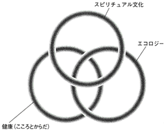
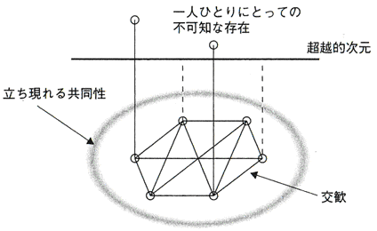

| ＜スピリチュアル＞はなぜ流行るのか (PHP新書) | |
| 磯村健太郎 | |
| PHP研究所 (2007) | |
〈スピリチュアル〉はなぜ流行るのか
磯村健太郎
はじめに
このところ、マスメディアで「スピリチュアル」ということばをよく見聞きするようになった。しかし、そもそもなにを意味するのかはっきりしないまま、流行語となって一人歩きしている。そこで、その本質をできるだけあきらかにし、いわゆる「宗教」と比較していこうというのが、この本の第一の目的である。
いまスピリチュアルといえば、なんといっても江原啓
之
氏の「スピリチュアル・カウンセリング」を思い浮かべる人が多いだろう。ほかにも、女性誌がパワースポットやヒーリングをさかんに特集するなど、ちょっとしたブームとなっている。
一方で、医療や看護の現場でもスピリチュアルという考えが注目されていることはあまり知られていないようだ。たとえば、こころのケアとは区別される「スピリチュアル・ケア」というものがある。あるいは、世界保健機関（ＷＨＯ）では「健康とはなにか」と見なおすなかで、「スピリチュアルにも健康」という表現を盛りこもうとする議論がなされた。
これらは一見ばらばらな動きのようだが、深いところではつながっている。一つひとつの背景を掘り下げていけば、時代の大きな流れが見えてきそうだ。社会現象の表面だけをなぞるつもりはない。歴史という縦軸とグローバル化という横軸をもちいた見取り図を描くのが、この本のもう一つのねらいである。
二つの目的に向かっていくうえで、とくに日本の若い世代に注目したい。どこかうつろだったり、なにかにむかついていたりする若者たち。彼ら・彼女らを理解するための新しいアプローチは、緊急と言えるほど必要とされている。
本題に入る前に、一枚の写真
から始めよう。これはケータイ（携帯電話）を使った「お悩み解決館」というサイトだ。有料会員は匿
名
で相談事をもちかけることができる。登録している会員は若者を中心に約四万人、一日の利用者はだいたい一万七〇〇〇人にのぼる。画面を見ると、カウンセラーに相談しているような書き方ではない。返事をよせてくれるのは、じつは、やはり同じような悩みを抱える会員たちである。
〈私〉とは――。
その意味をもとめて漂流する若者たちの姿をかいま見るようだ。このサイトについてはあとでもう一度触れるが、現代がたいへん複雑になっていることの一例と言える。生きるうえでの切実な問いに応えてくれたのは、かつては「宗教」だった。そのことばが素朴に届きにくくなったどころか、日本ではいま、「宗教」と聞いただけで毛ぎらいする人も多い。しかし、ひょっとすると、思わぬかたちをした「宗教的なるもの」がこころのよりどころになってはいないだろうか。これが、本書をつらぬく問題意識だ。
特定の「宗教」を信じているわけではない人の宗教意識を考える土台にするのは、宗教社会学の最前線でおこなわれている議論だ。わたしはこれを踏まえ、記者としての視点を重ねていく。なお、宗教社会学というのは、宗教学の立場から社会を見る、あるいは社会学から宗教を考えるものだ。
最初におことわりが二つある。
まず宗教というものを、ここではさしあたって、「合理的な秩序を超える領域について、人の行為や思考に意味を与えたり、意味を示唆したりするもの」と広くとらえることにする。カギ括
弧
をつけた「宗教」はそのなかでも、教えや組織などの輪郭が比較的はっきりしているものと狭く理解する。
もう一つは、宗教社会学では「神や仏も含め、宗教は人間がつくった文化装置」と考えるという点だ。宗教は神や仏がつくったわけではない。経済活動などと同じように人間社会の産物なのだ。わたしはスピリチュアルなものも同様と見なし、人によっては「うさんくさい」とか「こっけい」と思われる行為や思考も、まずは人間のいとなみとして観察する。
このあとすぐに、名詞形の「スピリチュアリティ」という聞きなれないことばが出てくるが、これがキーワードになる。スピリチュアル／スピリチュアリティを通じて、「わたしたちはどのような時代に、どのように生きようとしているのか」を問いなおしてみたい。次の目次にあるように、ヒット曲やベストセラー、ブログなど身近な社会現象も素材にした。奇をてらったわけではない。一見「宗教っぽい」感じがしないものも、現代ではひっそりと宗教的な役割を果たしているという話をしたいのだ。
それぞれの関心によっては若者論、コミュニケーション論、メディア論として読むこともできると思う。社会の「もっともやわらかい部分」に触れるヒントを得ていただければ、これほどうれしいことはない。
【注】
・年齢や肩書きは二〇〇七年一月現在にそろえた。
・引用した文章の表記は、誤記や送りがなの不統一なども、そのままにしている。
・本書の内容は筆者が所属する報道機関の見解を代表するものではなく、筆者個人の見方である。
・提供写真以外は筆者撮影
第１章 「ジュピター」はなぜ人を癒すのか
――スピリチュアル入門
東京・銀座に近い築地市場は、いまやグルメたちの人気スポットだ。新鮮な魚やめずらしい食材がそろい、おいしい食堂がある。テレビや雑誌がさかんに特集をくむので、観光バスに乗った団体もくるようになった。市場関係者がせわしく動き回るあいだをぬって、地図を手にした人たちが目当ての店をめぐっている。
そんな市場と道路をはさんだところに、築地本願寺がある。古代インド様式の本堂に入ると、外のざわめきがすっと消える。かぐわしい香がただよっている。おとずれた人はご本尊の阿弥陀如来に手を合わせ、しばしの静寂に包まれる。
片隅にある横長の机には、ほとんどの人が気をとめないことだろう。そこには色とりどりのノートが何冊も積まれている。一九九八年に自死した、ロックバンド「Ｘ ＪＡＰＡＮ」元メンバーｈｉｄｅへの思いをファンたちがつづっているのだ。
葬儀・告別式はここでおこなわれた。献花式には約三万人がおしかけ、警察が交通整理に出動した。ひつぎを乗せた車を見送る列は沿道をうめた。日が暮れても、泣きつかれた女性たちが寺のまわりに座りこんでいた。
ここはファンたちの聖地なのである。彼を忘れられない若者はいまもやってきて、自分の成長や悩みなどをノートに書きこんでいる。結婚した人、就職した人、手首を自分で傷つけるリストカットがやめられない人......。その多くは「見守っていてね」としめくくっている。まるで彼に直接、語りかけているかのようだ。一人の女性は丸っこい文字でこう書いていた（注・本人の名前は伏せた）。
親愛なるｈｉｄｅちゃん ｈｉｄｅちゃんがあっちで暮らすようになって、もう七年にもなるんだね。あーっ！ という間だったネ。私は少しも変わってナイよ。ｈｉｄｅちゃんは？ ××は相変わらず意地っぱりだよ。頭にきちゃうよ。変なトコで気が弱いし。自分で思っていたよりもずっとずっと弱かった。ギターも今はやってないし、取得が何もナイの。まあ、これから特技を作ってくよ！（中略）学校のレポートで命について自分なりの結論を出すって課題が出てんの。すごく深いよ。アド（筆者注・メールアドレス）考えた時、大学の授業中に教室の窓から見えたピンク色の空がずっと頭に焼きついててね。そん時、この空でｈｉｄｅちゃんとつながっているって確信したの！
「日本人は無宗教」と広く思われているようだ。たしかに、さまざまな意識調査で「あなたはなにか宗教を信じていますか」との質問に、「はい」と答える人はせいぜい二～三割。そのような印象をもってもおかしくはない。
だが、この場合の「宗教」とはなんだろう。
キリスト教や仏教、日本の新宗教などを連想するのが一般的ではないか。あるいはカルト集団を思い浮かべるかもしれない。そして、「わたしは宗教と無縁だな」と漠然と考えるのではないだろうか。なお、新宗教というのは幕末・維新期以降に生まれたものを伝統宗教と区別する総称だ。なかでも一九七〇～八〇年代に急成長した教団をとくに新新宗教と呼ぶこともある。
宇宙のしくみを説く教え、いのりの儀式、聖職者、整備された組織。かたちのはっきりしたものが「宗教」と思われているからこそ「あなたはなにか宗教を......」という質問がなりたつ。一般に共有されているイメージを借りて、便宜上、これをカギ括弧付きの「宗教」としている。
しかし、丸文字でノートにつづる女性たちが寺にやってくるのは「ｈｉｄｅの聖地」であるからで、かならずしも仏教徒としての自覚はないはずだ。すると、あのノートにあった、「ｈｉｄｅちゃんとつながっている」というリアルな感覚はどう理解したらいいのだろう。「宗教」には違和感をもつ人であっても、こころのどこか奥深くで、なにかが動くのを感じることはあるはずだ。とても繊細で、つかもうとすると逃げてしまいそうな感覚。それを、そっとすくいあげてみることはできないだろうか。
選挙報道では、きまった支持政党のない人たちを無党派層と呼ぶ。政治に関心はあるのに投票行動が移り気な層は分厚く、政治のゆくえを左右しかねないほどだ。それになぞらえれば、宗教的無党派層というものがある。特定の「宗教」への帰属意識はないが、なにか宗教的なるものに関心をよせる人たちだ。
『読売新聞』の世論調査によると「なにか宗教を信じている」人は全体で二割余で、二〇代は一割もいない（二〇〇一年十二月二十八日付朝刊）。ところが、くわしい属性別データを取りよせ、二〇代を調べてみると、円グラフ
のようなことがわかった。「神仏はいると思うか」という別の問いに、三割以上が「はい」と答えている。「なんとも言えない」もほぼ同数いることにも注目したい。つまり、神や仏がいるかもしれないと考える若者は少なくとも六割ということだろう。「宗教は信じない」との差はどう考えればいいのだろうか。
◎「宗教」に関する20
代の回答（読売新聞・全国世論調査）

英語には次のような表現がある。
"I,m not religious, but spiritual."
宗教的ではないが、スピリチュアル――。特定の「宗教」は信じてはいないがスピリチュアルなものは信じる、という意味だ。しかし、スピリチュアルとはなんだろう。
なんとなくわかるようで、よくわからない。精神的とか霊的と訳しても、どうもうまくいかない。だからカタカナのままで使われているのが現状だ。
spiritの語源はラテン語のspiritus。もともとの意味は「息」だった。ゆりかごでねむる赤ん坊の息づかい、あるいは死の床にある者の弱々しい呼吸。人はどこからか現れ、いずれ、どこかへ消えていく。そんな「生」の不思議さから、なにか深遠なものを表そうとしたのだろうか。
スピリチュアルの名詞形は「スピリチュアリティ」（spirituality）。このなじみの薄いことばがカギとなる。これを手がかりに、宗教意識の核心に迫る研究が進んでいる。
残念ながらこれも日本語になりにくい。「霊性」という訳語がないわけではないが、「霊」という語感がおどろおどろしく、定着しそうにない。形容詞の「スピリチュアル」のほうが発音しやすいので名詞代わりに使われることもある。いずれにしても、スピリチュアルとはなにか、というときも、スピリチュアリティの意味を基本に考えていきたい。
研究者のあいだでは、その定義をめぐって議論が続いている。こころみの一つは次のようなものだ。
おもに個々人の体験に焦点をおき、当事者が何らかの手の届かない不可知、不可視の存在（たとえば、大自然、宇宙、内なる神／自己意識、特別な人間など）と神秘的なつながりを得て、非日常的な体験をしたり、自己が高められるという感覚をもったりすること
（伊藤雅之『現代社会とスピリチュアリティ』溪水社）
わかりやすく言えば、
「宗教」の教えはかならずしも必要とせず、その人が体験したものこそが重視される、
いわば超越的な次元にある「なにか」とつながる感覚、 自己がなんらかのかたちで変容するような感覚をともなうこと――なのである。
自己がなんらかのかたちで変容するような感覚をともなうこと――なのである。
つながる対象は神や仏とかぎらない。自分を超えたなにかなのだ。そして、特別な存在とのつながりをたしかに実感したというならば、他人がなんと言おうとそれは宗教的な意味合いをもつのである。第三者からすれば、「ふーん」と聞き流したくなる話もあるだろう。「気のせい」「幻覚」「幻聴」では、と言ってあげたくなることもあるはずだ。しかし、こっけいに思えるようなことであっても耳をかたむけることが、人の宗教意識について考えるための出発点となる。
さきほどの女子学生の例で考えてみよう。彼女は新しいメールアドレスを考えながら、ぼんやりしていた。そのとき、教室の窓から見たピンクの空を思い出し、ｈｉｄｅと「つながっている」ことを確信したという。見えない存在とのつながりをリアルに体験し、それを通じて自分の「生」がなにかにささえられているような実感を得たことを、はずむように報告している。
ノートのことばにはいわゆる「宗教」との関連はうかがえず、「信仰心」ということばでもくくれない。書かれた場所は寺ではあるが、感覚そのものは仏教とはかならずしも関係がない。従来の「宗教」の枠からはこぼれおちる感覚について証言しているのだ。放っておけば、名前も与えられないまま見すごされてしまいそうな感覚だが、スピリチュアリティということばでなら捕捉できそうだ。
さきほどの定義のほかにも、宗教研究者たちはスピリチュアリティをさまざまにとらえている。
――なんらかの超越的存在を遠方に・抽象的に・曖
昧
に想定しつつも、直接そのような存在の臨在・顕在を認識するというよりは、むしろその力が遠方からきわめて人間的な領域に及ぶとみてとる感覚
――自分の中や自分と他者との間で働いていると感じられる、自分を超えた何ものかとつながっている感覚（の質）
――超自然的な力や存在に自己が影響を受けている感覚
微妙にニュアンスはちがうが、大きくとらえれば「なんらかの超越的な存在×それとつながる感覚」といったあたりが共通している。理屈でなく感覚、というところがポイントだ。たとえば、「生かされている」という言い方がある。あやうく難をのがれた人や大病を乗りきった人がそう語るのを、メディアで見聞きしないだろうか。でも、なにがその人を生かしている？ これは主語がはっきりしないために、受動的な言いまわしになるのだ。スピリチュアリティを表現しようとするときの特徴の一つである。
なかなかイメージがつかみにくいかもしれないが、さまざまな社会現象のなかのスピリチュアリティをしばらく追ううちに、わかっていただけるはずだ。
「Jupiter」という歌がある。二〇〇三年末に発売されたあと、売りあげがじわじわとのび、シングルＣＤだけでも一〇〇万枚を超えるヒットとなった。ホルストの組曲「惑星」のなかから「木星」を編曲したもので、平原綾香さんが歌った。ヒットの理由は、クラシックをポップスとしてよみがえらせた着想だけではないはずだ。のびやかな歌声と、そして歌詞の力が一体となったからにちがいない。
この歌は、二〇〇四年十月に起きた新潟県中越地震を機にちょっとした話題となった。発売からずいぶん時間がたっていたにもかかわらず、新潟のラジオ局に「応援メッセージ」とともにリクエストが殺到したのである。「ＮＨＫ紅白歌合戦」の出場者を選ぶときには被災者からの要望がたくさんよせられたという。被災者に思いをはせた人がこの歌を贈ろうとし、被災者も癒されるように感じたとすれば、いったいなぜだったのか。もしかすると人々は、かつて「宗教」が果たしていた役割をこの歌に託そうとしたのではないだろうか。
別の例を挙げよう。二〇〇六年二月のこと、わたしは大阪府堺市からの「ＮＨＫのど自慢大会」を見ていて、一人の男性の「Jupiter」に引きこまれた。歌のうまさのせいだけではない。ただならぬ思いが伝わってきたのだ。合格の鐘が鳴り、司会者がかけよった。
「二年前にお嬢さん、二五歳で肺の病気で亡くなりました。一人娘だったんですね......」
「ええ、そうです」
「どんなお気もちでこの歌、お歌いになっていらっしゃるんですか？」
男性の目はうるんでいるように見えた。
「天国に一人でいてる娘に『お父さん、がんばってるで！』というところ見せたいと思って歌いました」
この男性はスナックを経営している有村正さん（五八）。後日、話を聞いたところ、娘の瞳さんの写真を胸にしのばせて「一緒に歌った」という。一周忌のとき、瞳さんの友人らがあつまり、カラオケをしようということになった。そのうちの二人がこの歌を歌って、「瞳ちゃん、これ好きやったんで」と教えてくれた。
「それから『Jupiter』を深く知りたいと思うようになりました。娘はどんな気もちで歌ってたんかなあ、と思って。歌詞に『深い胸の奥で つながってる』とありますね。姿はないけれど、これを歌うと、娘とつながっていると実感するんです。歌詞をかみしめているうちに、『Jupiter＝娘』という気もちになってきました。たましいにひびく歌ですね」
生きるうえでの苦難がこのようなかたちでケアされる。まさに、宗教的ともいえる体験だ。スピリチュアリティは、わたしたちの意味世界を転回させ、生きる手がかりを回復させることがある。
思い出の曲が癒しの効果をもたらすことはあるだろう。しかし、「Jupiter」の場合はもう一つ奥がある。このような歌詞だ。
Every day I listen to my heart
ひとりじゃない
深い胸の奥で つながってる
果てしない時を越えて輝く星が
出会えた奇跡 教えてくれる
Every day I listen to my heart
ひとりじゃない
この宇
宙
の御
胸
に抱かれて
（中略）
愛を学ぶために 孤独があるなら
意味のないことなど 起こりはしない
（中略）
私たちは誰も ひとりじゃない
ありのままでずっと愛されてる
望むように生きて 輝く未来を
いつまでも歌うわ あなたのために
自分の内なる声に耳をすませる。〈私〉は一人ではなくて、なにかにつながっている。生命体としての存在を思い描いたような「宇宙の御胸」に抱かれる――。これにはどんな背景があるのだろうか。
作詞した吉元由美さん（四六）に話を聞くと、「この曲に出合ったとき、わたしの世界観を思いきり出せると確信しましたね」とあかしてくれた。「宗教」を信じているわけではない。しかし吉元さんは、「以前から不思議な感覚がある」と語り始めた。
「自分の深いところに、わたしのことをすべてわかっている自分がいる、すべての正解がわかっている『なにか』がいるという感じがずっとしています。深いところに大いなる自己がいる、神様がいるところとつながっている感じだと思うんですよ」
そのような感覚にめざめたきっかけは一七歳のとき。北海道への修学旅行の帰りに、フェリーで苫小牧から仙台まで渡った夜だった。
「デッキから見上げたら満天の星。そんなの見たことなかった。大昔に発せられた星の光を見ていたら、頭のなかで時間と空間の感覚がぐちゃぐちゃになった。でも、たった一つクリアーに思ったんです。わたしも宇宙を形成している要素の一つなんだ、わたしはなにかに包まれているって」
作家・エッセイストとして、女性の生き方のヒントを考える本も書いている。その一つには、このようなくだりがある。
つまり、私たちはたったひとりでは生きることができない。有形無形の支えがあってこそ、こうしてこの世に生を受けて生きることができるのだ。その支えてくれている何ものか、家族、友達、仕事、そしてすべての自然、さらに言うなら、私たちの命の原形を創造した誰か......こうして数え上げるだけで、多くのものに支えられている自分を感じずにはいられない。
（『自分に「ちいさな奇跡」が起きる本』三笠書房）
「Jupiter」の歌詞にはそうした吉元さんの内的世界が色濃く表現されていたのである。スピリチュアリティの定義の一例、「大自然、宇宙、内なる神などとの神秘的なつながりを得て......」を思い出してみる。すると、歌詞とぴたりと重なるではないか。スピリチュアルということばは一度も出てこない。「宗教っぽい」かといえば、そうとも言えない。しかし、こめられたメッセージがこれほど多くの人々に届いたのはなぜだろう。受け入れる側もすでにスピリチュアルなものに慣れ親しみ、漠然とではあっても吉元さんのような宇宙観を共有しているからではないだろうか。
吉元さんは「人間は進化していくべきものではないかと思っているんです」と言い、自身は「清涼でありながら、あたたかみのある『高貴なたましい』をもちたい」と語る。それは、さきほどの定義にある「自己が高められるという感覚」を大事にする姿勢にほかならない。
もっとも、スピリチュアリティは現代だけの現象ではない。たとえば平安から鎌倉にかけての歌人、西行は伊勢神宮をおとずれたとき、こんな歌をよんでいる。
なにごとのおわしますかはしらねども かたじけなさに涙こぼるる
そこにいらっしゃるのはカミかホトケか、それ以外の霊
威
なのか。そんなことはわからない。しかし、なにか大きな存在が、わたしを包みこんでくれている。なんともったいなく、ありがたいことだろうか――。思わずひれ伏してしまうようなリアルな感覚。西行が体験したのも、スピリチュアリティであったにちがいない。この瞬間、「宗教」の教え、儀式、指導者などを介さずに、直接、なにか自分だけの聖なるものと触れたのである。
宗教の核心に「なにか」を見出そうとするこころみの歴史は長い。欧米では十九世紀後半からとくに神秘主義の名のもとに議論された。禅を海外に広めた仏教学者の鈴木大
拙
（一九六六年没）は、スピリチュアリティ論のはしりともいうべきものを展開し、「霊性」と名付けた。
霊性という文字はあまり使われていないようだが、これには精神とか、また普通に言う「心」の中に包みきれないものを含ませたいというのが、予の希望なのである。
精神または心を物（物質）に対峙させた考えの中では、精神を物質に入れ、物質を精神に入れることができない。精神と物質との奥に、いま一つ何かを見なければならぬのである。
（『日本的霊性』岩波文庫）
大拙は、精神には倫理性があるが、霊性はそれを超越していると考えた。「精神の奥にある潜在しているは
た
ら
き
」とにらんだのである。
スピリチュアリティ研究が進んだのは、欧米での新しい宗教文化ニューエイジ（→第２章）が七〇年代に広がったのがきっかけだ。さらに日本では、オウム真理教事件の衝撃が大きく、日本社会の深いところでなにが起きているのかを根底からとらえなおす必要に迫られた。宗教の先鋭化と拡散化が、現代の潮流である。前者はカルトなどの問題、後者はこの本のテーマである「宗教的なるもの」の広がりだ。この二つが根っこでつながっていることは、最終章で触れる。いずれにしても、スピリチュアリティに人をゆたかにする可能性とあやうさの両面があることは、最初におさえておきたい。
話をいったん整理して、とりあえずスピリチュアリティとは「見えないなにかとつながる感覚」と考えることにする。では、スピリチュアリティは一般に広く「宗教」と呼ばれるものとはどうちがうのだろうか。
たとえばキリスト教や仏教、日本の新宗教を思い浮かべてみよう。いわゆる「宗教」の多くには時間をかけて練りあげた教えがあり、聖なる世界とこの世をつなぐ儀式がある。聖職者や教主らがいて、しばしばピラミッド型の組織がつくられている。だが、聖なるものに触れるうえで、それらは欠かせないものだろうか。そのような数々の要素を一つずつ取りのぞいていくとイメージしてほしい。すると、どうしても最後に残るのは、個人の宗教意識だ。その核心は、人がなんらかの超越的な存在とつながる感覚、つまりスピリチュアリティなのである。その感覚には強弱があるだろうから、とてもリアルなものから漠然とした感じ方まであると思われる。
言い換えれば、さまざまな「しかけ」を使って宗教意識を体系的にはぐくんできたのが「宗教」だった。多くの新宗教のように仲間の体験談をたがいに聞くことによっても、神仏に守られているという実感は育てられた。
しかし、用意された世界観・宇宙観にリアリティをもてない人が増えている。また、「宗教」は個人をなにかと拘束するという印象も広がり、日本では「宗教」ばなれが進んだ。ただ、それは「宗教」のエッセンス部分であるスピリチュアリティまで手放したことを意味しない。それどころか、「宗教」のきゅうくつさにとらわれず、自分にとっての聖なるものと直接つながろうとする動きはますますさかんに見える。
従来の「宗教」の領域からあふれ出したスピリチュアリティはさまざまにかたちを変えて、現代社会のいたるところで見出されるようになっているのだ。しかも、一過性のものでなく、ある程度まとまった潮流としてとらえることができる。そのため、スピリチュアリティを「宗教」と区別して考える必要が出てきたのだ。
いま、「スピリチュアル・カウンセリング」や「スピリチュアル・ヒーリング」といったものが流行している。それらはスピリチュアルということばを使っているので、この世とはちがう次元をあつかおうとしているのが、すぐわかる。しかし、この本ではもっと見えにくいものまで読み解いてみたい。「宗教」の枠におさまりきれない宗教的なるものは、わたしたちのとても身近なところにある。
スピリチュアリティは時代を超えたものだが、「宗教」の役割が後退しつつある日本社会において、重要な役割を担うようになっているのだ。宗教研究の最前線では、従来の「宗教」とは別のかたちをしたスピリチュアリティに注目している。「宗教」だけを想定しては、わたしたちのこころや考え方にはたらきかけているものを見失う。複雑化する現代。切実な必要性からのアプローチが始まっている。
従来の「宗教」の枠にとどまらず、なにか見えないものとつながる感覚＝スピリチュアリティについて考えていくと、現代社会で無視できないものにぶつかる。わたしたちの日常生活の一部となってしまった電子空間だ。インターネット、電子メール、ケータイ......。そこかしこにスピリチュアリティはほのかに立ち現れる。それは、はからずも宗教というものの基本構造を浮かびあがらせてくれる。
愛知学院大学助教授の伊藤雅之氏が発表した「ネット恋愛のスピリチュアリティ」という論文がある。オンライン上の見知らぬ他者との交感の場で、ある種のスピリチュアリティが独特のかたちで現れるというのだ。
ネット恋愛とは、パートナー探しサイトなどを通じて始まる電子空間での恋愛のこと。紹介されている大手のサイトの場合、およそ次のようなしくみになっている。まず、自分のプロフィールを登録したうえで、希望条件で検索し、申しこむ相手をしぼりこんでいく。最初のメッセージは、サイト管理者が仲介して相手にとどけられる。ＯＫの返事なら管理者に紹介料をはらい、メールアドレスをもらう。ここから一対一のメール交換が始まる。
写真を添えないかぎり、文字情報だけが手がかりだ。容姿や服装などの情報がないだけに、メールによる交流が深まると、内面性だけが重視され、「純粋に精神的」な関係は特別なものと感じられていく。
......当事者がパソコンの画面に向かう姿勢、そこに込められた凝縮された思いが相手とシェアされるとき、人々はそれを「魂の付き合い」と感じる。このとき、メール相手はオンライン上の神と化す。これこそ、まさにスピリチュアリティと呼ばれるものではないだろうか。この段階で、顔も知らない相手は単なる文字の上だけでのつながりを越えた特別な存在へと進展している。ある者にとっては、日常の世界では見せられない「本当の自分」をさらけだせる唯一の他者として、別のある者にとっては現実の生活で疲れた自分を癒してくれる理想のパートナーとして、なくてはならない重要な存在になっているのだと推測される。（伊藤、前掲書）
本章１で触れたように、伊藤氏は見えないなにかの例として大自然、宇宙、特別な人間などを挙げている。ネット恋愛の場合は、「特別な人間」とのつながりだ。ネット恋愛と「宗教」世界は次の点が共通している。
一、自己のエネルギーを凝縮して真実の自分を表現しようとする。どちらにおいても、真
摯
な態度で対象（オンライン上の相手、神）に向かい、つながりを得ようとする
二、ネット恋愛では、まだ見たこともない相手は、神などと同じように神秘性を帯びた「むこう側」に存在し、「こちら側」にいる自分を受けとめてくれる。日常生活で接する人々とは異なり、「ほんとうの自分」をさらけ出すことができる
三、交流の結果として生み出されるのは、自己変容、自己理解の促進、「つながり」の感覚を通じての自己解放である
当然ながら、「宗教」とはちがう点がある。その一つは、ネット恋愛ではまだ見ぬ存在だった相手と現実に会ってしまう可能性があり、スピリチュアルな関係にとどまり続けるのはむずかしい。伊藤氏はスピリチュアリティが現れる前提について、「特別な存在が抽象的で匿名性を帯び、非日常的であり、かつ日常に回収されることがないこと」としている。
ついに姿を現さないこと。これが大事だ。そもそも実在するかどうかわからない神は――数学者でもあったパスカルは神の実在を確率二分の一と考えたが――姿を見せないからこそ、神聖性を帯び、崇拝の対象となる。これは宗教の基本構造だ。神が実在するかどうかはわからない。だからこそ、信じる。このことはまったく矛盾しないのである。
電子空間に話をもどそう。急速に利用者が増えている「ブログ」では、スピリチュアリティを体験するようなことはないのだろうか。ブログはネット上で公開する個人の日記のことだ。それを読んだ人からのコメントを受け付けることもできる。さらにトラックバックというしくみを使えば、記事を別の人の関連記事にむすびつけることもできる。
自分の考えをネット上に公開する場としては巨大掲示板「２ちゃんねる」などがある。しかし、それは非日常的な書きこみ空間だ。スレッド（ある特定のテーマ）が盛りあがることが「祭り」と呼ばれることに、その性格がよく表れている。
それに対して、ブログは日常的な空間と言える。だから、内容も言ってしまえば他愛もないものが多い。見るかぎり、利用者は圧倒的に匿名だ。安心感からか、こころの内側を無防備なまでにつづっている人が多い。現代のこころの風景をこれだけまとめて観察することができる手段もないだろう。
日本でのブログ開設者はいま、のべ約三三〇万人。二〇〇七年には二倍以上に増えると推定されている。見ている人は約三四〇〇万人に増えそうだ（総務省ホームページ）。見知らぬ同士が電子空間で出会い、つながり始めている。そこでは「スピリチュアルなつながり」と呼んでもよい現象も起きている。
まずは、たがいにブログを読み合っている二人の女性のやりとりを見てほしい（ハンドルネームは伏せた）。
毎日、その人の文章や生活や考え方に触れているうちに、会ったこともないその人が、旧知の友人のように思えてきて...そして私の中で勝手にイメージがふくらみます。／たとえば、きのう。地下鉄の電車の、同じ車両に乗り合わせた女性。赤いフレームのメガネをかけて、個性的なバッグを持った、ちょっとボーイッシュで、おしゃれで、キュートな女性。その人を見たとたん......／あっ、Ａさんだ！ と私は思ってしまったのです。／いつも私のブログにかわいいコメントを寄せてくれるＡさん。もちろん、私は彼女に会ったこともないし、どこで何をしている方なのか、はっきりと知らないのですが、私の中ではＡさんのイメージは勝手にふくらんでいるのです。（中略）Ａさん、きのう地下鉄に乗っていませんでしたか。
Ａさんはふだん、仕事で徹夜続きであること、簡単料理のレシピ、縮
毛
矯
正
を考えていることなどをつづっている。特別なテーマで書き続けているわけでもなく、飛びぬけて人気をあつめているブログでもない。だが、それに好感をもった女性が継続的に読んでいたのだ。Ａさんの反応は意外なほどだった。
Ｂさん！！！！／...ヤダ...私...なんか...涙が...。なんて言っていいか分からないけど、えと、あの、ここでは書ききれないくらいなので、ちょっと気持ちが落ち着いたらチービーでお返事します。ホントウニアリガトウ
「チービー」とはトラックバック（ＴＢ）のこと。翌日、彼女は気もちを落ち着けて、こう記した。
何の気なしに書いてくれたかもしれないけど、Ｂさんの記事...沁みました。／普通に読みながら「そーそー！ なんか勝手にイメージ作って脳内で会話しちゃうよね～！」なんて気楽に共感してたけど、自分の名前を見た瞬間、目からね、汁がね、溢れちゃったんだなこれが...（苦笑）
誰かの記憶に自分が残っていること。
存在を認識してもらっていること。
何かの拍子に思い出してもらえること。
それが今の私にどれだけのチカラを与えてくれて、どれだけ背中を押してくれたことか！／ごめんなさい。何のことか分からないだろうし、なに一人で盛り上がっちゃってんだ？？？って思われるかもしれないけど。こうして記事にしながらも視界が滲んだりしてるんだけど（苦笑）
ここで彼女が感じたものは、見えない他者とのあいだに現れたスピリチュアリティにちがいない。見知らぬ人とウェブ上で表面的なやりとりをしているだけでは、スピリチュアリティ体験はないだろう。このブログの例は、こころの一番深いところに触れる感覚だったのだ。〈私〉がむき出しの状態で「ある」ということを実存というならば、彼女にとってはまさに実存にかかわる問題だった。もっと俗な表現を使うなら「たましい」に触れること、と言ってもいいだろう（なお、ひらがなで書く「たましい」という表現は霊魂ということではなく、「生」の根源との意味でこのあとも便宜上使うことにする）。
「宗教」が人生の意味や宇宙の原理を語り、それが素直に受け入れられた時代はよい。だが現代では、〈私〉という存在はなかば唐突に投げ出され、だれもその意味を説明してはくれない。そんなところへ電子空間を介して、「誰かの記憶に自分が残っている」「存在を認識してもらっている」という感覚が彼女をつらぬいた。
わたしは、スピリチュアリティ（見えないなにかとつながる感覚）を中立的な概念と考えている。ただし、一つのはたらきがある。それは、「人の生になんらかの実存的意味を与えてくれるかのように直感させたり、いのちのリアリティを感じさせたりする側面がある」といったものだ。広義の宗教はさしあたって、「合理的な秩序を超える領域について、人の行為や思考に意味を与えたり、意味を示唆したりするもの」とした。スピリチュアリティは宗教意識の核であり、スピリチュアリティは広義の宗教の一側面と考える。
スピリチュアリティは〈私〉の深いところ、やわらかいところをつらぬく。あるいは包みこむ。人によっては、そっと触れられる、ゆるされる、めざめさせる、気付かされる、ありがたく感じさせられる、といった受動的な感覚となる。ほんの一瞬のこともあるし、いつもそのような感覚に包まれていることもあるだろう。
ブログでＡさんが感じとったであろう実存的な意味。それは宗教が与えてきた役割そのものだ。Ａさんは、そうしたスピリチュアルな側面をうまくことばにできないもどかしさを感じているようだ。頭で理解することではなく、感覚的なものである以上、だれかに説明しようとしても、たいへんあいまいになるのは仕方がない。いや、そもそもことばにしてしまう必要はないのかもしれない。
わたしも二年前からブログを書いている。やはり匿名で日常の雑感をつづり、他人の日記を一日三〇分は読む。コメントを書きこんだり、もらったりしているうちに、気の合う「友人」が何人かできた。内面をさらした日記を継続的に読んでいると、相手のライフスタイルはもちろん、こころの揺れまで理解できるような気がしてくる。こうなると、表面だけの付き合いではないような感覚がたしかに生まれる。それどころか、社会的な立場や容姿といった「じゃまなもの」を飛びこえて、相手の本質に直接触れるような感覚がめばえてくるのがわかる。
あるとき、そのなかの一人から、「きょうはお誕生日ですよね。おめでとう」とのメッセージをもらって、とまどった。すっかり忘れていたのだが、プロバイダーに登録したときに、自己紹介欄の誕生日を「七月二十八日」とてきとうに書いておいたのだ。これを見た「友人」はパソコン内のカレンダーにでも記憶させておいたのだろうか。
これを見た瞬間、まるでマイナスとマイナスをかけ算するとプラスになるように、「架空の誕生日×電子空間内メッセージ＝リアリティ」とでもいうべき感覚がした。「ついに姿を現さないもの」がどこかでわたしの存在を認識している――。さきほどのＡさんほど切実ではないにしても、それはスピリチュアリティに近い感覚だった。リアリティというのは、そのままどこかに存在するものではなく、〈私〉のなかで再構成されて姿を現すものだ。
「友人」とカギ括弧をつけたが、それは不要かもしれない。ブログ上の友人は、同じ時と空間で一緒に泣き笑いした友人とはまた別の位相の存在感を帯びてきている。精神科医の香山リカさんはインターネットについて、「顔の見えない相手と本質的なやり取りができるので、人間関係のプライオリティーさえ変わってしまう部分があります。一昔前ならば自分の大切な人は、いつもそばにいる家族や友人、知人、といった順位だったのですが、インターネットで心を打ち明けるやり取りができてしまうと、顔の見えない相手が一番大切な存在になってしまうことだってありえるのです」（『日本経済新聞』二〇〇五年七月二十九日付朝刊）と語っている。
わたしたちは人生の途上で、孤独やむなしさなどの波にほんろうされる。そもそも、生まれた瞬間から死への道程に立たされているという意味で、絶対的に無力な存在でもある。だからこそ、弱く、無力な自分をささえてくれるなにかを必要とする。
親と子、夫婦、友、恩師......。人と人の出会いの不思議さを指して「縁」と呼ぶ。その日本語に宗教的ニュアンスがこめられるのも、合理的な説明を超えた力がはたらいているかのように感じるからにちがいない。
こうした特別な人とのむすびつきを表すうえで、「絆
」という日本語が有効だった。絆とは、簡単にはほどけないものの隠
喩
である。よろこびや苦労をともにしたり、一つの目標に向かって力を合わせたりする関係は、それ自体に価値があった。絆は〈私〉という不安定なものに、いつもの場所を用意してくれる。しかし、ここちよさの半面で、それは〈私〉をしばりつける。わずらわしさもある。そうした絆の重苦しさからのがれようとする傾向は現代の特徴だ。絆という比喩は、もはや実態にそぐわなくなってきた。
ブログのうえで起きるようなことは、たぶん「細いつながり」だろう。いつも、しっかりと〈私〉をささえてくれるような安定感は期待できそうにないからだ。しかし現代では、そうしたはかないものを丹念に編んでいくことも、意味のないことと切り捨てるわけにはいかないのである。時代は、固くむすぶ「絆」から自分でスイッチをＯＮ／ＯＦＦできる「つながり」へと移っている。
第２章 「千の風になって」はなぜヒットしたのか
――「大きな物語」なき時代
人類の長い歴史のなかで、時代の歯車がゴトリと音をたてて回ることがある。この数十年はそのような節目だったにちがいない。
おおむね六〇年代あるいは七〇年代以降の文化世界を指して、ポストモダン（近代後）という。フランスの哲学者リオタールは、「大きな物語」の解体と呼び、近代国家をまとめあげるシステムがうまく機能しなくなったことを指摘した。あるいは、英ブレア政権のブレーンである社会学者ギデンズは、『暴走する世界――グローバリゼーションは何をどう変えるのか』（佐和隆光訳、ダイヤモンド社）のなかで、外見や呼び名はもとのままなのに中身が変わってしまった国家や家族などを「貝殻制度」と呼んでいる。さまざまな制度が地球上のいたるところで風化し、本来の役割を果たせなくなっているというのだ。こうしたことは、日本における「宗教」の状況にも少なからずあてはまる。
伝統仏教の連合体である全日本仏教会の元理事長・白幡憲佑氏と天台宗の元宗務総長・杉谷義純氏は、仏教専門紙が企画した「喝!!
日本仏教」という対談で次のように話している。
杉谷 ......画家はいくら絵がうまくても、絵が売れないと生きていけない。しかし仏教界は、これといった価値基準がないものだから、宗教家として立派であろうがなかろうが、世襲ですから住職になれる（中略）。しかしおおむね世間の常識から見ると、期待の外ですかね。ただなんとかならないかとエールが飛んでくるということは、仏教そのものへの期待がまだあると思うんですね。
白幡 エールが飛んできている間はいい。これがなくなったらどうするのか。戦後仏教界をずっと見てきて、時々エールが飛んでくる。しかし、そういうエールに対して応える努力がどんどん薄くなっていると思うんですよ。それを痛切に感じたのが大阪万博（昭和45
年）とその後の万博です。（中略）あの頃はまだ仏教が社会と一緒になってというのがあった。（『週刊仏教タイムス』二〇〇五年一月一日付）
「その後の万博」というのは、一五年後のつくば万博のことだ。この対談で白幡氏は「どこの宗派も言っていることは坊さんの再教育です。しかし再教育といったっても実際に信仰心があるのかどうなのか」とも嘆いている。葬式仏教ということばがあるが、仏教はもっぱら「死」にかかわり、なかなか生者の指針にはなりきれないのが実情だ。仏教界も社会貢献活動に力を入れ始めるなど努力はしているが、一般の人にはまだ縁遠いだろう。
一方、欧州でも教会ばなれが深刻だ。カトリック国スペインでさえ、若い世代（一五～二四歳）で信徒としての自覚がある者は半数をきっている（『朝日新聞』二〇〇六年七月八日付朝刊）。価値観の多様化などさまざまな理由があるだろうが、もしも若者たちが教会を通さずに直接「聖なるもの」に近づこうとしているとしたら――。
約一〇億人のカトリック信徒にとっての聖なる地、バチカン。ローマ中心部に位置するこの小さな独立国は、ローマ教皇庁というもう一つの顔をもつ。世界に張りめぐらせた教会のネットワークを通じた情報収集の拠点でもあるのだ。ここに暮らす「神の代理人」ローマ教皇のもとへ、各国の司教団が五年に一度、その国の現状報告のためにやってくる。ラテン語で「アド・リミナ」（使徒たちの墓所への訪問の意）と呼ばれる行事だ。米国司教団が一九九三年にバチカンにきたとき、当時の教皇ヨハネ・パウロ二世は次のような異例の警告をした。そのことばからは、にがにがしい思いが伝わってくるようだ。
これらの超宗教的運動は、啓示に対してほとんど注意を払うことがありません。その代わりに、東洋的霊性や心理学的技術から借用した要素に基づく知識や経験を通して、神に近づこうとします。（中略）こうして彼らは、真の罪の概念と、キリストによるあがないの必要性を否定するのです。（『カトペディア２００４』カトリック中央協議会）
超宗教的運動――。教皇が話しているのは「ニューエイジ運動」（New Age movement）とその周辺の動きのことである。ニューエイジとは米国で七〇年代以降に広まった、スピリチュアリティを重んじる信念や実践の総称だ。運動といっても中心となる組織があるわけではなく、小さなグループがゆるやかなネットワークでつながっているだけだ。個人主義的な傾向がきわだち、グループは基本的に出入り自由だ。ある程度まとまった思想傾向としては、なにか神的なものや霊的なものが宇宙や自然、人間のなかにあるという汎神論的な特徴がある。そうした「聖なるもの」とつながるために、たとえば瞑想やヨガ、さまざまな心理学的な技法などを使って、こころの成長や意識の変容を目指す。
ニューエイジは英国をはじめとする欧米諸国、オーストラリアなど先進諸国を中心に、比較的ゆたかな層をまきこんでいった。日本には七〇年代後半に上陸し、「精神世界」と呼ばれた。八〇年代からは書店にコーナーが常設されるほどになった。
しかし、精神世界というひびきが古くさく感じられるようになり、二〇〇〇年以降になると、「スピリチュアル」ということばが使われだした。オウム真理教を思い出させる暗いひびきをリセットしたいという情報提供側の事情と重なった。最近のブームである「スピリチュアル」のなかにはニューエイジの流れをそのまま引き継いでいるものも少なくない。
バチカンは日本を「ニューエイジ輸出国」と見ている。恐れているのは、教会の権威をおびやかすだけでなく、知らないうちに信徒のなかにも入りこんでくることだ。米国でどのようにしてニューエイジが生まれたのかはあとで触れることにして、まずは、日本で起きていることを見ていく。「うさんくさい」と感じる方がいるかもしれないが、これもまた、「人間のいとなみ」としての宗教現象である。
全国各地でひらかれている「スピリチュアル・コンベンション」というイベントがある。略して、「すぴこん」。うたい文句は「癒しとスピリチュアルの見本市」だ。フロアーいっぱいにならべられた机やブースを使って、何百もの個人・グループが店を出している。
チャネリング、オーラ写真、透視カウンセリング、音と香りのリラクゼーション、波動、ホメオパシー（同種療法）、レイキ（霊氣）、天使グッズ、パワーストーン、催眠療法、タロット占い、オーラソーマ（色によるセラピー）......。手をかざして体に「気」を送りこんでいる人もいれば、来場者がもってきた水晶の原石に「エネルギー」を与える人もいる。
こうした世界に触れたことのなかった人にとっては、一瞬、顔をしかめる「濃さ」があるかもしれない。会場案内の紙には各店について次のような一行解説が添えられている。
「三人のセラピストがあなたをエンパワーし、前進を後押しします」
「様々なストレスを魔法のように解放し、本来の自分の力を取り戻して行くワークです」
「直観力がさえ、深い自分の心の声をキャッチでき、共時性が起こり始めます」
「感情、性格、相性、適正な職業、及び過去、現在、未来等を理解することが出来ます」
東京での入場料は一五〇〇円。それぞれの店で相談やセッションを受けるたびに数千円の別料金をはらう。来場者は平均で約一三〇〇人。二〇～三〇代が中心で、六～七割が女性だ。若いカップルからベビーカーを押した家族連れまでいて、学園祭かフリーマーケットのようなにぎわいである。
店はイベントのたびに募集される。すぴこん代表の小泉義
仁
氏（四二）は店をたばねるだけの呼びかけ人だ。店の数は多いが、テーマは大きく二つにくくることができる。「癒し」と、いわゆる「自分探し」だ。
同じような企画としては一九九六年、ニューエイジ系の雑誌社が主催した「フィリ・フェスティバル」があり、翌年にもう一度開催された。そのあと途切れていた見本市を受け継ぐかたちで、「すぴこん」は二〇〇二年秋から始まった。店の数ものびている。東京では二、三カ月に一度のペース。開催地は増え続け、札幌から沖縄まで計二〇カ所以上でおこなわれている。
小泉氏はオウム事件を意識し、「暴走する者が出ないよう注意している」と話す。集団性は強くないか、マインドコントロールをしていないか、などを見るという。ウェブ上ではリンク集も運営し、そこで紹介する個人やグループは二〇〇〇以上。ただ、こちらの内容まで目が行きとどかないため、自己責任での利用を呼びかけている。
すぴこん会場にきていた女性会社員（二八）の例を紹介しよう。彼女はこの日、「オーラ」の写真を撮り、身につけているペンダントの石がもつ「パワー」を見てもらった。そのあと自分と家族、友人の過去世（前世）を読んでもらう。それによると、彼女はメキシコのユカタン半島で暮らしていたが、いまから五〇年ほど前、七〇歳のころに死んだ。当時の兄が現在の親友だという。
「ともだちはマヤ文明とかそのあたりの文化に興味あったと話していたので、やっぱりほんとうなのかなって。ちょっとびっくりしたけど違和感はありません」
◎「すぴこん」会場。手前は「気」の体験コーナー
彼女は恵まれた環境に育ったが、就職後につまずく。人間関係がうまくいかず、パートも含めて六回転職したという。少し長くなるが、彼女の話に耳をかたむけてみたい。
――自分のなかですごい閉塞感というか、殻をかぶっている自覚があったんです。それをどう打ちやぶっていいか、って。何年か前はひっつめ髪で、色気のない格好だった。全然にあわないのに、どうやって服を選んでいいのかわからない。変えたいなとは思ってたけど、どこからどう手を付けていいのか......。殻っていうのは、そういう感じ。少しずつ変えてここまできたけど、まだ殻をかぶっている。いまもその殻を壊している最中。
――変わりたいというのは、ずっとあった。保育園から小、中、高校と行って。もうレールがばーって決まっているじゃないですか。そのなかでどうしようって。ふつうの人は日常のなかで折り合いをつけながら変えられるんでしょうけど、要領が悪いんです。変えたいなと思いながらもふっきれないで。専門学校に行って、就職もなんだかすぐ決まっちゃって。人からは楽に映ったかもしれないけど、自分で自分をしばってた。仕事は続けてたけど、でもこれ以上前に進めない、限界だ、って仕事をやめた。それが二二歳のころ。それから半年ぐらいは一日中ずっと家で寝てましたね。もう使いはたしたって。
――自分探しの一環でずっと占いに興味あったんです。でも、たんなる『当てもの』じゃなくて心理面とか精神面とか見るものです。落ちこんだときには、占星術のチャートをながめます。ほんとうに落ちこんだときは寝てるしかないけど。で、起きられるほどに回復してくると、まず占い。生まれたときのチャートと現在の星の状態を組み合わせる。こういう星回りで生まれてきたんだから、今はこんな状態でも悪くないなとか、そう本質からはずれてはいないな、とか考える。あとは夢占い。面談してもらえるんです。こんど夢占いやっている人のトークライブに行ってみるつもり。
――「宗教」には魅力を感じない。アレルギーを感じるほどじゃないけど、思想からなにから守らなきゃいけない戒律があるから。でもスピリチュアルはＯＫ。なんでこっちのほうがいいのかな。わたしは基本的に、地に足がつかないタイプ。だから目の前の日常生活に集中しなければ、と思っているんです。わたしは基本的にこっち（スピリチュアル）系の人間なんで、日常生活でこれだけがんばったから、ふ
る
さ
と
に戻っていいだろう、という感じできている。本格的に勉強する道もあるかな。許されるのなら、そういう生活がいい。現実の生活はあんまり......どっちかというと刺激がほしい感じかなあ。
この語りの要点をまとめてみると――。
一、いまも「ほんとうのわたし」が見えず、自己変容をのぞんでいる
二、占星術などが自己確認と癒しの役目を果たしている
三、きゅうくつそうな「宗教」には魅力がないが、「スピリチュアル」にはひかれる
注目したいのは、スピリチュアルな世界を「ふるさと」と表現している点だ。やすらげる、癒されるという感覚の表れなのだろう。そこには現実の世界と、別のリアリティのあいだをどこかたよりなく行き来している姿が浮かびあがる。
すぴこん代表の小泉氏はこう言う。
「衣食足りると、次はこころのほうに行くんですよね。こころのゆたかさを求める。スピリチュアルを実践する人は社会生活をしっかりいとなんでいて、お金ももっているし、ここちよいところに住んでいる。でも、こころをより成長させたい。われわれは、もう修行なんていらないよ、と言う。パッパッパッとやっちゃえる。肉体痛めつけてどうすんのって。修行で意識が向上することもあるけど、時代遅れですね。その人が気付けば変われる。こころ、マインド、頭の問題ですから」
じつは情報提供側の小泉氏も、最初は少しずつこの世界に近づいていった。興味をもったのは約五年前。きっかけの一つを次のように話す。
「村上龍さんの本（山岸隆氏との共著『「超能力」から「能力」へ』講談社文庫）にエネルギーが入っているＣＤの話が書いてあった。うそだろ、と思った。でも面白そうだから、紹介されていた会に、行ってみたんです。ＣＤ買って聴いたら、固かった筋肉がゆるゆるになった。で、なんだこれって。別のＣＤは手からエネルギーが出るようになる、というので枕元でかけっぱなしにした。そのうち熱くなって、手からエネルギーが出るようになっちゃったんです。気功みたいに。もうびっくりして、あ、こういう世界があるんだ、と。でも、受講中はうしろの席に座ってた。六カ月間はためしのつもりでおそるおそるやってたけど、だんだん本物っぽいやと思うようになったんです」
すぴこん会場でもおこなっているチャネリングというのは、なんらかの「高次元の存在」と意識レベルで波長を合わせ、メッセージを受け取ることだ。それをわかりやすいことばにして伝えるのがチャネラーで、米国の女優シャーリー・マクレーンの本『アウト・オン・ア・リム』で広く知られるようになった。書名は「木の上の果実を採るには、危険を冒して、枝（limb）の先まで行かなくては」という意味だ。たとえ世間から笑われても勇気を出せば人生を変えることができる、という気もちがこめられている。実際、米国では彼女に対して、からかいの声もわきあがった。しかし、本は世界的ベストセラーになり、日本でも一九八六年に日本語版（地湧社）が発売されて大ヒットした。
チャネラーの特徴の一つは、ニューエイジの世界観に通じる説明をし、その人を「霊的に」高めようとしてくれることだ。日々の生活に即した助言を与えることもある。すぴこんに参加している「ミカエル」という名のチャネラーは「高次元の存在」についてこんなことを述べている。
だから簡単に言えば家庭教師だよね。「これはこういう風に勉強したら効率が上がるよ」「ここはこういう風に問題解いたほうがいいよ」って言ってる家庭教師みたいなもの。中学生、高校生を教えるのに大学生が来るのと一緒だね。高校生が高校生教えるわけにはいかないでしょ。そういう感覚でいるといいよ。あと、個人的にその人を守護する、守護霊がいる。それが学校の科目とかに限らず多岐にわたって、生活態度とか精神状態とかをちゃんと見守って指導してくれるんだよね。（『すぴこんハンドブック』二〇〇四～二〇〇五 冬号）
ニューエイジの源流の一つは、六〇年代に米国で大きなうねりとなった対抗文化（カウンターカルチャー）だった。経済的には恵まれた家庭に育った若者たちが中心となって、「近代が突き進んできた道はどこかおかしい」と、異議申し立てを始めたのだ。長髪とジーンズ姿のヒッピー文化はやがて、公民権運動、学園闘争、環境保護、ベトナム反戦運動へと引き継がれることになる。
対抗文化は十八世紀以来の啓蒙主義・理性主義の伝統にさからい、「交感と直
截
性の世界」の復活を目指すものだった。知性を超える領域に関心をよせる流れが生まれ、ＬＳＤのようなドラッグもしばしばもちいられた。人間にひそむ可能性を探求しようとする「ヒューマンポテンシャル運動」というものが起きた。カリフォルニア州ビッグサーという町にある「エサレン研究所」は、こころとからだを解放するための実験空間となり、さまざまな心理療法の技法を紹介するワークショップがひらかれた。一般市民も超常体験に触れ、自己啓発や自己実現の道に誘われた。日本でもバブル経済の時期に流行のピークをむかえた自己啓発セミナーの多くは、この流れを汲
んでいる。
合理的にはあつかいかねる領域に踏みこむ運動の一群は、ヨガや瞑想、禅といった東洋の思想や文化もさかんに取りこんでいった。西洋の近代主義とは別の生き方を模索するのだから、それは自然だったわけだ。
象徴的なのはビートルズだ。まずインドにひかれたのはジョージ・ハリソン夫妻。「超越瞑想」で知られるインドのマハリシ・ヨーギがロンドンにくるというので、ジョン・レノン、ポール・マッカートニーらを講演に誘った。一九六七年夏のことだ。その翌年にはさっそく、メンバー全員がガンジス川のほとりにあるマハリシの学校で、本格的に瞑想をためしている。そのころハリソンが作詞した「Within you, Without you」にはこんな一節がある。
すべては己れの内にあることを認識せよ
誰も他人を変えることはできない
自分がいかに小さな存在かを知れば
生命の泉はこんこんと湧き出す――君の内側に そして君の外側に
（中略）
己れへのこだわりを捨てれば見つかるかもしれない
心の安らぎはすぐそこで待っているのだ
そして いつの日か すべての人々はひとつだと気づいたとき
生命の泉はこんこんと湧き出す――君の内側に そして君の外側に
（『ビートルズ全詩集』内田久美子訳、シンコー・ミュージック）
実体があると思いこんでいる「我」への執着を捨てよ。すべては一つにつながっている。「いのち」は尽きることがない。そうした東洋思想が詰まった曲だ。
西洋の人々が東洋に対して「古代の叡智の宝庫」というイメージをもつようになったのは十八世紀末から十九世紀初め。インドのサンスクリット語がギリシャ・ラテン語と共通性をもつことが発見され、みずからの文明の起源をさかのぼることになったのがきっかけだった。そうした背景はあるが、六〇年代から起こったインドの神秘への関心は、洋の東西という軸よりも「反近代」という点からとらえたほうがいい。行きすぎた近代主義・合理主義にかわる別の生き方をもとめる機運が高まったのだ。
ビートルズ解散後にレノンが発表した「Imagine」は、いわばニューエイジ宣言でもある。歌詞で主張されているのは意識の変革だ。国境も、財産も、人種を区別することも、システムとして人をしばる宗教も意味なんてない。ちょっと意識を変えて見てごらん。人はもっと自由になれるし、世界は平和になるはず。「いま、ここ」にある自分を見つめなおして今日のために生きよう。そんなメッセージが読みとれる。
こうした動きに早くから注目していた東京大学大学院の島薗進教授（宗教学）は、ニューエイジとその周辺、さらに精神世界などのグローバルな潮流を包みこむ概念を新霊性運動（new spirituality movements）あるいは新霊性文化と名付けた。英語の表記が複数形なのは、とても幅の広い運動群であることを示すためだ。
それは個々人の「自己変容」や「霊性の覚醒」を目指すとともに、それが伝統的な文明やそれを支える宗教、あるいは近代科学と西洋文明を超える、新しい人類の意識段階を形成し、霊性を尊ぶ新しい人類の文明に貢献すると考える運動群である。（中略）この大きなうねりが生じてから、そのうねりに加わろうとしている運動群を新霊性運動とよび、それまでに展開してきた近代のさまざまな霊性運動は部分的にそこに吸収されたものと見る。
（『精神世界のゆくえ』東京堂出版）
ことばのひびきを優先し、わたしは新霊性運動のことを「スピリチュアル文化」と言い換えることにするが、指す内容は同じである。
ニューエイジにくわしい著述家の伯
宮
幸
明
さん（四四）は、スピリチュアル文化と他の領域とのかかわりを図１
のようにイメージしてみせる。あくまで一例なのだが、これを使うといろいろ説明しやすい。たとえば、スピリチュアル文化が「健康」と重なるところには心理療法やボディーセラピーといった「癒し」の系譜や気功などが入る。三つの輪の重なりには、有機農業のなかでも、「食べ物のいのちをいただく」という思想を合わせもつものが含まれるだろう。
伯宮さんはこう語る。
「こころやからだの病気をなおしたい、あるいは、より快適な状態になりたいと思って、セラピーに興味をもつ人もいるでしょう。その段階ではまだ、自分を変えたいというスピリチュアルな世界には入っていない。でも、わたしの場合はこの図の全部に興味がある。エコロジー的な部分が良くならないと地球は『進化』しない。そういう意味ではどれも切りはなせません」
◎図１ 伯宮さんが描くイメージ

「宗教」と入れ替わるかのように、スピリチュアル文化は原初的な宗教形態も取りこもうとする。縄文文化や、神社神道が成立する前の原始神道、さらにはネイティブアメリカンなどの先住民文化も対象だ。「宗教」の物語が凋落したあと（ポスト「宗教」）、宗教が体系化される以前（プレ「宗教」）への回帰という現象が起きている。
たとえば宮崎駿監督のアニメ映画もそうだ。『千と千尋の神隠し』（観客動員数二三〇〇万人以上）や『もののけ姫』（同・一三〇〇万人以上）を見て、自然とのつながりを感じたり、みずから生きる力をたしかめたりしているとすれば、そこには宗教的なはたらきがある。東京大学大学院教授の鶴岡賀
雄
氏（宗教学）はこう評している。
そして何より大切なことは、これらの作品では、「この世」を包んでもっと広く深い「霊的」世界が、その真相は定かには理解できないままにたしかに存在していて、それがこの世の生の閉塞感を破り、癒すものとなっている、そうした感覚が、とりわけ日本的自然――多くの日本人にとって、「自然」とはすでに半ば「この世」を超えた世界である――の感覚と結びついて、巧みに捉えられていることである。
（『福音宣教』二〇〇三年十二月号、オリエンス宗教研究所）
このコメントはそのまま、「私のお墓の前で泣かないでください」で始まる『千の風になって』（講談社）にも当てはまりそうだ。もとは作者不詳の英語の詩で、作家・新井満氏の日本語詩をおさめた本がロングセラーとなり、最近はテノール歌手らが歌って話題となった。
この詩の思想をアニミズム論から語るのはかならずしもまちがいではないだろう。ただ、広く支持される背景を考える際には、「宗教」以前のスピリチュアリティのあり方としてだけでなく、近代後にはぐくまれた「新しいスピリチュアリティ」としても見るべきだ。わたしたちの多くが「宗教」の世界観に代わるなにか、生と死をめぐる閉塞感に風穴をあけてくれるものをもとめる時代精神を呼吸しているからこそ、これだけの社会現象となるのだ。新井氏は、作者が言いたかったのは「いのちの大きな循環」のことと書いている。これは第４章で述べる「いのち」の系譜にもかかわってくる。
ちょっとショッキングな数字を紹介しよう。
九州大学の藤野武彦名誉教授（循環器専門）は学生たちに、脳の「疲労度」を調べるアンケートをおこなった。その結果、「不安だ」「希望がもてない」「イライラする」といった項目について、週に二～三回以上感じると答えた者がそれぞれ二～五割いた。それ以上に驚くのは、「自分は価値がない人間だと思うことがありますか？」との問いに「はい」と答えたのが二四％にのぼったことだったという（『ＢＯＯＣＳダイエット』朝日文庫）。これは二〇〇〇年の調査データだ。
この節では、スピリチュアル／スピリチュアリティをいったんはなれて、わたしたちはどんな時代に生きているのかを考えてみたい。手がかりにするのは「孤独」ということば。〈私〉という存在の意味や価値に直結する問題であるからだ。個人化が進む社会の姿を大づかみし、さきほど見たニューエイジ・精神世界をはじめとするスピリチュアル文化がさかんになった背景を見ていきたい。
わたしはずっと、中村うさぎ氏が気になっている。ブランド物を買いあさり、ホスト遊びに熱をあげ、借金に追われる。あの破滅型の作家だ。みずからの姿をネタにし、美容整形にいたっては手術中の写真までさらしている。極端な生き方ではあるが、自己像が見えにくい現代日本を象徴しているように思えるのだ。
その彼女が興味深いことを書いている。欲望を次々と満たしていくのは「足し算ではなく引き算」、つまり欲望の対象を減らしていくこと、というのだ。そして最後に残る「金で満たせない欲望」こそが根源的な欲望だ、とも。
何故「破滅の恐怖」が快感に繋がるのか、を考えれば、私の消費の動機は明白である。私は己を消滅させたいのである。死にたいという意味ではない。それならとっくに自殺してるさ。死が目的なのではなく、その先にある生まれ変わりが目的なのであり、消費による破滅は抽象的な「死と再生」の儀式なのだと言えば、ご理解いただけるだろうか。
私が根源的に欲しがっていたのは、「価値ある私」であったのだ。今の自分には生きていても何の価値もないと思っているからこその破滅願望と再生欲求であった。そして、おそらく、これこそが現代人の究極の欲望なのではないか......つまり我々の欲望の最終的な対象とは「自分という幻想」なのではないかと思えるのである。
（『朝日新聞』二〇〇六年一月十日付夕刊）
〈私〉とはなにか、を徹底的に追いもとめた末に気付いた真実である。これを実存的な問題としてもう少し考えたい。
そもそも「実存」とはどういうことだろう。サルトルは無神論に立って、あらかじめ人間の本質を定めるものはなく、まず実存すると述べた。人間は「世界内に不意に姿をあらわし、そのあとで定義される」というのだ。人間は最初はなにものでもなく、みずからつくるもの。だからこそ人間は自由である、と主張を展開させた。
それはそれで大事なのだが、現代社会に生きる人々の実存を考える手がかりはむしろ、サルトルと影響し合ったとされるレヴィナスにあるかもしれない。リトアニア生まれのユダヤ人で、ナチの強制収容所に収容されたこともある思想家だ。実存の不快感を描いたサルトルの小説『嘔吐』刊行より二年前の一九三六年、レヴィナスはすでに「吐き気」という概念を論文「逃走論」でもちいている。
われわれは内側から突き上げられる。われわれ自身の根底が自分自身の重みによって窒息する。われわれは「心に痛みをもつ」〔「胸がむかつく」〕のである。
（『レヴィナス・コレクション』合田正人編訳、ちくま学芸文庫）
自分が〈私〉であるほかないことに対して、言いようのない不快感がこみあげてくることを語っているのだ。明治大学の合田正人教授（思想史）はレヴィナスの意を汲んで、およそ次のように書いている。
――〈私〉が一人でいるとか、だれかと一緒にいるといったこととは別の問題で、「孤独の身を引き裂くような痛切さ」は実存すること自体に由来する。孤独とは〈私〉がどうしようもなく自己の重みに繋縛されていることである。
〈私〉から逃げようとしても、その果てにあるのは、やはり〈私〉でしかない。中村氏が書いていることは、レヴィナスの「逃走論」の一節、「逃走は自己自身から脱出せんとする欲求である。言い換えるなら、も
っ
と
も
根
底
的
で
も
っ
と
も
仮
借
な
き
繋
縛
、自
我
が
自
己
自
身
で
あ
る
と
い
う
事
実
を
絶
と
う
と
す
る
欲
求
なのである」とぴったり重なる。レヴィナスも、自己からの逃走が死への逃避を指すのではないと記している。そうではなくて、〈私〉とは本質的に孤独な実存であることを言いたいのだ。
そうやって考えてみると、現代社会に生きるわたしたちも吐き気＝実存の不快感に襲われているのではないだろうか。家族や友人がいても一人ぼっちのような気がする、生きている手ごたえが感じられない、つまらないのになぜ生きなければいけないのか......。それは「気づきにくい吐き気」かもしれない。若者が口にする「むかつく」ということばも、無関係ではないように思える。だれかに向けられただけではなく、もしかすると、自分自身の内部から突きあげる不快感を言い表しているのではないだろうか。
中村氏は、「株を買い占めるＩＴ社長」も自己の存在意義を拡張したような幻想にひたれるゲームにハマっているだけだ、と書いている。そういえば、中高生がともだちと一緒に写ったプリクラで手帳をうめつくしたり、ケータイに何百人ものアドレスを登録するような行為にも孤独の影がさす。それらもまた、「わたしはこんなに価値がある」と自分に言い聞かせるための切実な欲求にちがいない。
こうした問題に、「宗教」は応えることができるのだろうか。
キリスト教や仏教などの歴史宗教や日本の新宗教は「救い」という観点から「救済宗教」とたばねられる。そこでは、そもそも人間は救いを必要とする苦境に生きている、という思想が前提にある。たとえば仏教は「生老病死」ということばで苦難をとらえる。
全体として、歴史宗教は来世での救済に重きを置いている。来世で無限のやすらぎが得られるのであれば、現世での苦はなにほどのものか、というわけである。これに対して新宗教は現世での救済を重んじる傾向があり、「病気なおし」への関心も高い。研究者は新宗教が与える癒しについて、「私の出来事」との和解と考えている。
人間が苦難の出来事から解放され、生きられるのは出来事と和解し、やすらぎを与えられた時である。出来事の一般的説明ではなく、「私の出来事」の意味ある個別的説明がおこなわれるとき、人は癒される。
（新屋重彦・島薗進・田邉信太郎・弓山達也編著『癒しと和解』ハーベスト社）
なぜ自分だけが病気になるのか、まじめに働いているのになぜ貧しいのか。そのような状況において肉体的苦痛や経済的苦労だけでなく、「意味の欠如」に人は苦しみを感じる、というのだ。
わたしは、現代の関心は「私の出来事」からさらに、「私という出来事」へと重心が移っているのではないかと考える。成熟社会では、どういうわけか存在してしまっている〈私〉という出来事そのものが個別的説明を必要としている。〈私〉こそが切実な「意味の欠如」であり、「いわれなき苦しみ」となるのだ。一時代前にサルトルやレヴィナスが指摘したことは、いまこそ重みをもってわたしたちに迫っている。そんな現代だからこそ、見えないなにかとつながるスピリチュアルな感覚は、「私という出来事」についてなにかを示唆するかのように受けとめられる。理性によってではなく、むしろ感覚によってである。
時代を大きくくくれば、歴史宗教（来世での救い）→新宗教（現世での救い・「私の出来事」との和解）→スピリチュアル文化（「私という出来事」との和解）という流れではないだろうか。
ここに割れやすい一個のカットグラスがあるとしよう。長距離輸送の際、それはまず、プチプチの付いたエアークッションにくるまれる。そして、大きさに合わせてなかを仕切った段ボール箱に入れられる。その箱はロープでトラックの荷台にゆわえられる。
このグラスが、長い人生を旅する〈私〉とすれば、それを幾重にも包むのは共同体だった。たとえば、血縁共同体（イエ）や、それを取り囲む地縁共同体（ムラ）であった。共同体とは、とりあえず「過去からの伝統に対して一定の意義を見いだす集団が、それ自体として再生産の機能を保持する場合に成立するもの」（鈴木謙介『カーニヴァル化する社会』講談社現代新書）と考えよう。
人生というものは、そうした共同体のタテ・ヨコの糸に織りこまれていく過程なのだが、共同体は「孤独な実存」をおおい、さしあたってはその本質を見えにくくしてくれる。しかし、共同体という名の「梱包材」はこの数十年でさまざまなレベルでほどけ、わたしたち本来の実存の姿がむき出しになろうとしているかのようだ。それが、スピリチュアルな文化のすそ野が広がり続ける背景にある。
一九七七年、テレビドラマ「岸辺のアルバム」が反響を呼んだ。妻の不倫をはじめとする家族崩壊のイメージが、多摩川の堤防決壊に重ねられた。現実がドラマを追いかけるかのように、その放映終了から一カ月後、有名進学校に通う息子の暴力にたまりかね、父親が息子を絞め殺す事件が起きた。八〇年には予備校生が両親を金属バットで撲殺した。そのころから家庭内暴力ということばが、すこし遅れて家庭内離婚という表現が一般化していく。
たとえ暴力はなくても、イエの姿は変わりつつある。カリスマ的な人気のあった漫画家の岡崎京子氏の世界は、そのあたりの空気をすくいとっている。一九八九年にはこんなエッセイを書いた。
気がつくと知らない人が目の前でせんべかじってたりする。何となく知ってるような気
がするけど確認できない。名前を呼ばれてびっくりしたりする。その人はお母さんぶった物言いをする。きっと私のママなんだろう。
よくわからないが。
生活に支障はない。
多分この家にいる人は私の家族なんだろうと思う。惨事は起こらない。住宅地の中でホーム・ドラマ以外の事は起こってはいけないものだよと神様の声がする。さいですかと私は思う。私は家の中で生活する。知らんぷりしながら。何も起こらない。起こしてはいけないんだと思う。そして家族は仲良しだ。
（『思想の科学』一九八九年十二月号、思想の科学社）
『嘔吐』の冒頭を思わせる文章だ。主人公ロカンタンは自分の部屋に入ろうとして、「つめたい物」が手のなかにあることにとまどう。手をひらいてみると、それは扉のノブだ。不条理に、ただ存在するものへの違和感を、岡崎氏の場合は家族に感じていたかのようである。
岡崎氏には『pink』という作品がある。ホテトル嬢ユミと、その母親の愛人との奇妙な交流が、一見、コミカルに描かれている。だが、終わり近くに突然、ユミはレヴィナス的「吐き気」に内から突きあげられる。主人公は都会のただなかで、「あの発作」に襲われ、へたりこんでしまう。「どうしてあたしはここにいるの？ とか」「どうしてここに立っているの？ とか／考え出したら止まらない」――。
一九五八（昭和三十三）年の東京を舞台にした映画『ＡＬＷＡＹＳ 三丁目の夕日』は、「なつかしくて泣ける」と評判を呼んだ。舗装されていない路地裏に小さな商店が軒をつらね、隣近所がたがいに顔を知っている時代だ。念願の白黒テレビを買った家には大勢がおしかけ、みんなでプロレス中継を見る。建設途中の東京タワーが、やがてくる高度経済成長を象徴している。
濃厚な地域共同体は、いまでも一部で機能していることだろう。子どもが生まれると村をあげて祝い、葬式でも準備から片付けまで手伝うといった風習は地方には残っている。しかし、近代化とともに大都市は変わってしまった。行動半径は、歩ける範囲から大量輸送の交通メディアを必要とするまでに広がった。人々はたがいに「見知らぬ他者」として現れる。都市のこのようなあり方を早稲田大学の若林幹夫教授（社会学）は、「共に異なり」「共に移動する」という意味で「共異体＝共移体」と名付けている。
次の歌詞を見てほしい。首都圏のある高層住宅で最近つくられた「マンション歌」だ（注・×印部分は伏せた）。
一
窓からのぞむ富士の嶺／みつめて育つこどもたち
ひとみに浮かぶ「希望」の二文字
夢をひろげるひなどりたちのあったか巣箱
××××××／われらのふるさと
二
はげしくゆきかう××電車／仕事にむかうおとなたち
胸に抱いた「使命」の二文字
夢追いかける働きびとのちからのいずみ
××××××／われらのふるさと
三
地域のまとめ××神社／住みよいまちにとおとしより
足取り軽く「奉仕」の二文字
夢ふたたびと不死鳥たちが集う止まり木
××××××／われらのふるさと
郊外の私鉄沿線に建つ「共移体」のイメージが二番の歌詞に示され、三番ではマンション近くの小さな神社が出てくる。鎮守のカミを祀
った神社は、正月や七五三、年に数度のささやかな祭りのとき以外、とくに目にとまらない「風景」となってしまった。「地域のまとめ」という歌詞には、氏神に統合される氏子たち＝地縁という価値への郷愁がただよっている。
さらに、「われらのふるさと」というフレーズが繰り返される。集合住宅は、放っておけば「見知らぬ他者」のあつまりとなってしまう。歌詞からは、都市生活者のこころの危機感さえ読みとれる。
ここでは数年前から、お盆とクリスマスの年二回、共用の庭や集会室を使って親
睦
パーティーをおこなっている。住民が中心となって企画し、焼きそばや綿菓子の屋台を用意したり、大道芸人をまねいたりする。管理会社はちょうちんなどの準備も手伝い、祭りを演出する。マンション歌はこうした場で流される。
祭りはもともと、カミや死者の霊を呼びむかえて、なぐさめたりなごませるものだ。同時に、人々のつながりをたしかめ、よみがえらせる機能があった。こうした「つながりとしての祭り」はいま、語るべき伝統をもたない各地のニュータウンでもさかんにつくり出されている。プライバシーは守りたい。でも、つながりがなくなるのは不安。そのあいだで揺れ動く住民の気もちが感じとれる現象だ。
ポーランド生まれの社会理論家バウマンは、都会の見知らぬ他者を「よそもの」と呼ぶ。
よそもの同士が互いにうまく注意を払わずにいることは、都会という条件の下で生き抜いていくうえで重要な価値をもつことは明らかである。しかしそれはまた、あまり人から愛されないという結果をも生む。（中略）人込みにまぎれると、自分自身をあてにするしかないような気がする。自分はつまらぬもので、ひとりぼっちで、簡単に見捨てられるものであるように感じられる。プライバシーの侵害を防ぐことで得られる安心が、孤
独
としてはねかえってくるのである。もっと正確にいえば、孤独はプライバシーの対価である。
（『社会学の考え方』奥井智之訳、ＨＢＪ出版局）
絆がほどけてゆく。
そんな時代に、人と人のつながりはどのように展開していくのだろう。考える手がかりとして、ウェブサイト『ほぼ日刊イトイ新聞』を主宰するコピーライター、糸井重里氏のことばを取りあげてみる。消費社会をささえる広告業界に身を置いてきた糸井氏は近年、軸足を以前とはちがうところに移しつつある。彼の見方では、農業社会→工業化社会→情報化社会と進んできたが、次にくるのは「魂を満足させることを求める」社会ではないかというのだ（『インターネット的』ＰＨＰ新書）。
『ほぼ日』と略されるこのサイトは、それを先取りするこころみだ。一九九八年に始まり、いまは一日の総ページビューが約一〇〇万件。糸井氏や数々の著名人のコラムのほか、言いまちがいのエピソードを集めた「言いまつがい」などの読者参加型の企画も多数ある。ことばや写真、動画による「テーマパーク」のようになっていて、読者は好きなコーナーを選ぶことができる。
サイトとは別に、約九万人の希望者にはメールマガジンが配信されている。匿名の読者からよせられた「くすっと笑える話」や「しんみりさせる話」が中心。家族や学校、仕事などにまつわる内容が多い。
糸井氏は、「祭りをつくるってことを、ぼくはいままで請け負いでやってきた。でも、自前でも祭りができるという可能性が、インターネットならあるぞと思ったんです」と書いている。これらはさながら、現代版「つながりとしての祭り」である。
しかし、そのあかるさの裏で、現代人の孤独を強く意識しているのが特徴だ。アクセスすると、こんな言葉が飛びこんでくる。
「Only is not lonely + LOVE.」
糸井氏はこのメッセージを掲げる理由をこう述べている。
さて、インターネットのディスプレイ画面を見つめている人は、根本的なところで孤独です。乱暴な言い方だということは承知していますが、こんな姿が孤独でないわけはありません。「もしかしたら、誰でもないのではないか」という自分が、遠いところの人間の影を探して、ブラウザ画面という穴から、世界をのぞき見している。そんな感じでインターネットは見えているのではないか、と、コピーライター糸井重里は考えたのでした。
しかし、のぞき見ている世界が、必ずしも、その孤独なひとりひとりに対して冷たいものだとは限らないのではないか。画面の向こう側に、孤独な自分と同じ目をしてこっちを見ている人間の気配を感じたときには、「孤独」と「孤独」の間につながりができて、「孤独」であることが、終わってしまうのです。（糸井、前掲書）
ここでいう「孤独」がかならずしも「一人ぼっち」の意味ではないことは、自分が「誰でもないのではないか」という、実存の淵をのぞきこむような表現からうかがえる。そして、「孤独」が当然のように導くキーワードは「隣人」である。
糸井氏は『ほぼ日』で、「隣人とはどこにいるのか」と題した記事を書いた。遠い国での戦争で、「ほんとうに人を殺したり建物を破壊する現場」をテレビで見たことに触れている。
......どんどん「遠く」がなくなっていくのだ。そういう時代に、あらためて思う。「遠く」のない時代の「隣人」って、どうなんだろう、と。へたをしたら、都会にいる人の場合には、文字通りの隣に、どんな人が住んでいるかもしれない。テレビでよく見る芸能人のほうが、よほどよく知っているような感覚が身に付いている。（中略）
情報の多い「遠く」が近く感じられ、見知らぬ「近く」が遠く感じられるようになってしまった、そういう時代に、ぼくらは「隣人」を見つけ直すということをしなくてはいけないように思う。（中略）
ぼくにとっての隣人とは、どういう人たちのことだろう。
あなたにとっての隣人は、どこにいるのだろう。
いまの時代に、隣人とは、誰のことなのだろう（「ダーリンコラム」二〇〇三年三月二十四日）
「隣人」といえば、新約聖書の「善きサマリア人」の話に出てくる「あなたの隣人をあなた自身のように愛せよ」ということばが知られる。律法の専門家に「隣人とはだれのことですか」と問われたイエスはこう語る。
――ある男が強盗に襲われた。着物をはぎとられ、けがをして倒れている。そこへ祭司が通りがかったが、男を見ると反対側を過ぎていった。レビ人も同様だった。しかし、一人のサマリア人はかわいそうに思い（he had compassion）、近寄って介抱した。イエスは「三人のなかで、だれがこの男の隣人になったと思うか」と問いかける。
「compassion」は共に（com）苦（passion）を分かち合うという意味のことばで、新約聖書に繰り返し出てくる。この話は、同胞だけを隣人と見なすのではなく、任意の他人をも隣人と見なすキリスト教の精神を語っているとされる。
ハーヴェイという経済地理学者のことばを借りるならば、わたしたちは「時間―空間の圧縮」の時代に生きている。「ときに世界がわれわれに向かって内側へと崩れかかってくるように見えるほど空間的障壁を克服しながら、生活のペースを加速化する」のである。そこでは家族や友人、隣近所といった旧知の間柄、電子メディアに現れる他者までがいったんフラットにならぶ。このなかで、サマリア人のように近づき、「共苦」してくれる者こそが隣人になりうる。逆に、もっとも身近だったはずの者が自分のそばをすりぬけ、「遠い国のだれか」の隣人になり得ることさえ意味している。
『ほぼ日』を心の受け皿にしてくれている読者がいる。誰かに何かを伝えたいと思ったときに、『ほぼ日』を思い出してくれる人が、たくさんいる。（中略）
「『ほぼ日』って、もう宗教じゃないの？」
とからかうように言う人もいるのだけれど、そういうときのぼくの返事は決まっている。
「宗教だよ。出入り自由の」
（『ほぼ日刊イトイ新聞の本』講談社文庫）
『ほぼ日』の世界は癒し系ではあるが、超越的な次元を想定していないのでスピリチュアルな文化に含めるつもりはない。しかし、「宗教っぽい」というクオリア（感覚質）をもつ人がいるとすれば、それは「隣人」を求める孤独な者たちの「つながっている」感覚が透けて見えるからだろう。
いま、わたしたちはかぎりなくバラバラになろうとしている。だが、なにか一つのものがバラバラの個をやわらかくつなぐとき、人と人のあいだに立ち現れるものがある。それを「共同性」と呼ぶ。「共同体」より「共同性」が選ばれる時代への変容だ。そこにこそ、スピリチュアルなわたしたちを育てる土壌がある。
第３章 「江原現象」をどう見たらよいのか
――セラピー文化の諸相
「宗教」の世界観・宇宙観はどうも受け入れにくい。かといって、たとえば、「こころは脳内現象である」と片付けてしまう近代科学の考え方も割り切れなさが残る。わたしたちの多くはそのように感じ、「宗教」と合理主義のはざまのグレーゾーンに放り出されている。
そこをカバーしようとするのがセラピーである。スピリチュアル文化はセラピーの技法を積極的に取りこみ、自分の奥深くでめざめることをうながそうとしてきた。この章では、セラピーとしての側面からスピリチュアル文化を見ていく。
サイコセラピー（心理療法・精神療法）はもともと、心理的な原因によると思われる症状に対して、薬ではなく、面談などを通して治癒を目指すものだ。種類は多く、米国では二〇〇種類以上とも言われている。
一方、略語である「セラピー」は学術用語よりも広い意味で使われ、セルフヘルプ（自助）グループや自己啓発セミナーも含む。大事なのは、そこではしばしば「見えないつながり」や「見えない力」に気付くことが重視されることだ。「セルフヘルプ・ブック」と呼ばれる自己啓発本の一群も周辺に陣取っている。これらも合わせて「セラピー文化」と呼ぶことにする。
研究者が注目する集団型セラピーの一つに、アルコール依存を断とうとする匿名でのあつまり「アルコホリクス・アノニマス」（ＡＡ）がある。米オハイオ州で一九三五年、医者や家族が力を尽くしても救われなかった依存症の二人が出会ったことから始まった自助グループだ。発足の過程ではキリスト教の影響を受けているが、宗教団体ではない。しかし、このあつまりがもちいる「一二のステップ」というテキストには次のような表現が出てくる。
自分を超えた大きな力が、私たちを健康な心に戻してくれると信じるようになった（ステップ二）
私たちの意志と生き方を、自
分
な
り
に
理
解
し
た
神の配慮にゆだねる決心をした（ステップ三）
「自分を超えた大きな力」や「自分なりに理解した神」は、なにを思い浮かべてもよい。まさにスピリチュアルな実践である。アルコール依存症はやっかいで、たとえ長いあいだ断酒が続いても、飲んだらふりだしにもどってしまう。そもそも、多くの人は「自分は依存症だ」という現実をなかなか認めようとはしない。だから、ＡＡでは完全な敗北を宣言することから始める。どん底まで落ちて、あるがままを認めることが出発点なのだ。
許可をもらって、東京都内のミーティングに参加した。ちょうどその夜は、ステップ二を話し合うところだった。
「目には見えないけど、このミーティングで発生するものがたしかにある。気恥ずかしいけど、おれは愛って呼びたい。愛に触れているから飲まずにいられるんだ」
「なかまといる『ここ』に不思議な力がはたらいている。そうじゃないと、何十年と続いた酒をやめられるわけがない。不思議な力をもらっているとしか考えられない」
リーダー役がいるわけではなく、全員が依存症だ。名も知らぬなかまとは、同じ「苦」を分かち合うことができる。そのとき、「共同性」が立ち現れる。よく似た体験への共感という弱い意味ではない。なかまの苦が自分のものとしてそのまま感じられ、自分の苦もまた、なかまがリアルに感じてくれる。もとはバラバラのはずの個人が、深いところで重なり合うイメージだ。それによって自分がなにものであるかについて根源的な自覚を得る。
ＡＡで起きることをモデル化すれば、図２のようになる。それぞれが「自分なりに理解した神」を思い浮かべる。一方で、なかまとのあいだには「共同性」が生じる。いわばタテとヨコの二つのつながりによって、〈私〉がささえられるのだ。やや乱暴なのを承知で、近代以前の一神教世界を図３
のようにイメージすれば、二つのちがいが浮き立つだろう。
「近代以前の」としたのは、現代ではたとえば新宗教の信者がスピリチュアルなものにひかれることは不思議ではないからだ。ちょうどこの二つの図を重ねたかたちである。話はそれるが、米国では約九割が「宗教を信じている」と答える一方で、なんらかの瞑想を実践する人だけでも約一〇〇〇万と、この一〇年で倍増している（『ＴＩＭＥ』二〇〇三年八月四日号など）。これも同じ図が考えられそうだ。
「一二のステップ」は他のさまざまな自助グループに広がり、ことばの一部を変えてもちいられている。ＧＡ（ギャンブル依存症）、ＮＡ（薬物依存症）、ＥＡ（感情の問題）、ＯＡ（摂食障害）......。こうやってanonymous（匿名の）を意味する「Ａ」のつくグループをならべてみると、どこかを脱臼してしまった現代社会の断面を見るような気がする。
◎図２ ＡＡ
◎図３ 近代以前の一神教世界
ここで、「はじめに」で紹介した人生相談サイト「お悩み解決館」について説明をくわえ、ＡＡとくらべてみたい。苦の分かち合いの現代的な姿であり、セラピー文化のすそ野に広がる若者たちの闇をうかがうことができるからだ。運営する会社「ワイズクエスト」（東京都千代田区）によると、相談も回答も匿名で、一回あたり三〇〇文字以内にかぎられる。パソコンからも書きこめるが、ほとんどはケータイ（携帯電話）からのアクセスだ。ある日の「心の悩み」の欄に載った二〇歳の女性、Ｃさんのことばを見てみよう（注・ハンドルネームを伏せたほかは原文のまま。以下、同様）。
×××です。生きたいでもいろんな事で悩んで結局は手首にリスカしての繰り返し...なのに傷なんて気にするなってそんな言葉聞きたくない......今まで辛いこと抱えて生きてきたのに...冷たくしないでお願いだから皆のそばに居たいよ...×××の事気づいてよ...
「リスカ」というのは手首を切るリストカットのことで、このサイトでもよく目にすることばだ。死にいたるほど深くは切らないが、かなり危険な自傷行為だ。六〇年代に欧米で広がり、日本では七〇年代から若い女性を中心に増えた。かならずしも自殺願望があるとはかぎらない。むしろ、この女性が書いているように「生きたい」という叫びとして理解されることが多い。専門家のあいだでは「手首の人格化」とも呼ばれる。「悪い自分」を手首に投影して傷つけていると考えられるからだ。
Ｃさんの書きこみには、三つの投稿がよせられた。その一つは同じ歳の女性、Ｄさんからだった。
気づいているよ
ここに居るよって叫んでたんだね あなたは一人じゃないよ。もう自分傷つけないで、私は悲しい
会ったこともないはずなのに友達が苦しんでるみたいに思えて本当になんか悲しくなった
この短い回答は、まるで心理療法の基本が「傾聴」「受容」「共感」であることを知っているかのようだ。耳をかたむけ、批判せずにそのまま受け入れ、自分のことのように感じてあげる。まさに、語り手と聞き手の共同作業だ。しかしＤさんもまた、相談者である。別の画面で、次のように書いている。
なんか私無駄なこと繰り返して生きてるのかな？ いつか頑張っていれば必ずいいことあるってむくわれるって信じてきたけど、頑張っても頑張ってもあともう少しのところでいつも踏み潰される、蹴落とされる、その度にばからしくなって頑張れば良いことあるなんて信じられなく、負けたくないけど辛い、ふと、全部壊したくなる自分さえも、こんな自分が悔しい。
これに対して、Ｅさん、Ｆさん......と、悩める者が悩める者に応答するしくみになっている。つまり、万単位の人による円環構造の疑似セラピールームなのである。「そのままでいいんだよ」という助言が多い。悩みを抱える自分、自分がきらいな自分を、まずはそっくり受け入れようと勧めているのだ。一方、だれかに必要とされているように感じることで、〈私〉の価値を自覚する効果もある。このあたりは、ボランティア活動が参加者自身にとってセラピー的な役割を果たすことがあるのにも通じる。
相談者がウェブに書きこむ行為は、一種の「ナラティブ・セラピー」と見ることもできる。自分自身を主人公とするストーリーを編むことで、癒しを期待するものだ。実際、精神科医はしばしば、自己像を客観視させようと相談者に日記を書かせる。「お悩み解決館」もセラピー文化の一例ではある。
ただ、超越的な世界観はないのでスピリチュアル文化には含められない。この点がＡＡとはちがう。ふまじめな投稿はオペレーターがあらかじめ削除するなど、操作性も高い。また、相談相手を指名することはできず、一対一のセラピーのように相談者と回答者が深い信頼関係をきずくことはむずかしい。
それでもこのサイトに注目するのは、参加者たちは「だれかとつながっている」こと自体に癒しを、あるいは、無理とはわかっていても、それを超えた救いをもとめているように見えるからだ。
精神医学には「シュヴィングの手法」と呼ばれる心理療法的なアプローチがある。統合失調症にもちいる薬物療法がなかった一九〇〇年代初頭のオーストリアで、シュヴィングという名の看護師が、患者のかたわらにただ座ってみることにした。すると、それだけで患者と気もちが通じるようになったという報告に由来する。これは、へたにかかわるのも放っておくのもむずかしい症状に適しているという。
現代のシュヴィングは電子空間に現れる。「解決館」にアクセスが集中するのは午後十一時から午前一時台。匿名なので、ためらうことはなにもない。親にも友にも打ちあけられない思いを、いつもそばにある小さな機器から送信すれば、だれかがなにかしらの応答をしてくれる。あなたは一人ぼっちじゃない――。それは、ベッドの横にだれかがいてくれて、そっと手を取ってくれるような感覚なのかもしれない。
大きな書店にはたいがい、「自己啓発」のコーナーがある。たとえばＤ・カーネギーの『人を動かす』は古典の一つだ。こうした出版物は身近なだけに影響力が強く、セラピー文化のなかでもあなどれない。
現代を生きるわたしたちは、感情を一定の振れ幅におさめようと、つねにコントロールしているところがある。自分をいつも観察し、最適な状態かどうかに関心をもち、自身に対する誠実さを重んじる。そのような人物像のパターンを、米国のリーフという社会学者は「セラピー的なもの」と呼んだ。
あるビジネス誌に「相手の心を動かす能力」をめぐる編集長対談が載っていた。テーマは、米国の心理学者ゴールマンが提唱した「ＥＱ」（感情的知能）について。彼の著書『ＥＱ――こころの知能指数』は一九九六年に日本でも発売され、ベストセラーになった。対人関係において感情をコントロールするＥＱの大切さを説く本だ。編集長は、ゲストにまねいたコンサルティング会社の社長にこうたずねている。
テレビスタジオに入ると、小さなテレビが出演者の目の前にあって、出演者が自分の話している姿をモニターして見られるようになっています。自己相対化というのは、あのモニターのことだと考えればよいでしょうか。
社長は「それは良い喩
えですね」と応じた。
普通は自分の姿というのは恥ずかしくて、見たくないものです。けれどもそれを他人のように突き放して、しっかり見るというのが自己相対化ですね。（中略）自信というのは、元の英語ではセルフイメージ、またはセルフコンフィデンスなんですが、要するに「自分は何者か」というイメージをちゃんと持っていることです。
（『フィナンシャル ジャパン』二〇〇五年五月号、ナレッジフォア）
ＥＱそのものはスピリチュアル文化に含めにくいが、それに接している。自分の感情を、距離を置いてながめることは、スピリチュアル文化のなかの「こころをコントロールする技法」の基本だ。自分の感情をそのまま受け入れたあと、自分を見つめなおし、他者との関係に折り合いをつけていこうとする。
「モニター画面の自己像」という比喩はなかなか便利だ。くっきりと鮮明で、満足できる像ならばよい。しかし、もしモニター画面がぼやけて自分の姿がよく見えなかったら、あるいは「こんなのは私じゃない」と言いたくなるような像が映っていたらどうするだろう。
ややポップなセラピーは姿を変えて増殖している。こころをコントロールすることに重きを置き、より心理療法的な性格を帯びている例を、従来型の「宗教」と比較していく。
取りあげるのは、二〇〇四年七月の発刊以来、増刷を重ねて一二〇万部を超えた自己啓発本『キッパリ！ たった５分間で自分を変える方法』（幻冬舎）。意外に思われるかもしれないが、スピリチュアルな文化がとても見えにくいかたちで浸透している好例なのである。
著者はイラストレーターで、一九六五年生まれの上大岡トメさん。表紙にある「天高くコブシを突き上げるポーズ」（テンコブポーズ）は、だらだらとしていたい自分を「シャキーン」とさせるための姿勢だという。こうした簡単な「自己改革」のための六〇のヒントを紹介し、それぞれに四コマ漫画が添えられている。たとえば、こんな内容だ。
・人と比べない。
――時々、他の人のことが、ひどく気になることがあるんです。／仕事の成果に始まって、持っているもの、着ているもの、住んでいる所、生き方なんかをね。（中略）人と比べることは、その人のものさしに乗っかっちゃってること。常に自分を否定して、受け入れることができなくなってしまいます。
・口癖を変えてみる。
――実際どうやって変えればいいかというと、「プラス」の表現をするんです。／次の例は言っている意味は同じなんだけど、言い方をプラスにしたものです。／「クライアントを怒らすような企画を出すなよ！」→「クライアントを喜ばせるような企画を出せよ！」／とかく日本人は「～しなかったら、～できないよ」と二重の否定をしがち。そこのところを変えてみましょう。
・ラッキーなことを、数える。
――夕方、近所のコンビニの前を通った瞬間に、ぱっと看板に電気がつきました。／思わず「ラッキー！」／一日に１回必ず起こっていることだけど、なかなかその瞬間を見ることってないですよね。（中略）「ラッキー」なことを、気にすることが大切なんです。昨日より今日が、今日より明日が「ラッキー」の数が増えたら嬉しいし、今日「ラッキー」と思わなかったことも、明日は「ラッキー」と思えるかもしれない。
それぞれのヒントの最後には、まとめのことばが大きな文字で書いてある。
ナンバーワンよりオンリーワン。「すべてはうまくいっている」を口癖にしよう。心と肩のコリをほぐそう。「まだ間に合う」「今がチャンス」「やってみなけりゃわからない」に変えよう。世界でたったひとつのカラダを好きになろう――。
ならべてみると、「マイナスの感情をコントロールする」「こころの向きをプラスに」という発想が見えてくる。楽観的な態度や自己肯定感はニューエイジに特徴的だ。しかし、それに直接なじんでいない人はこの本のスピリチュアルな側面に、なかなか気付きにくいはずだ。
この本によると、上大岡さんが「自分を変えたい」と思ったきっかけは三三歳のとき。友人から「傍若無人でデリカシーのない奴」と言われた。人と会うのもこわくなり、そんな自分がまたきらいになる。しかし、半年たったころ、ある本で「大きい変化は小さい変化から」ということばを読んだ。それから、五分ぐらいでできる「自己改革」を思い立ち、インターネットのサイト上でコラムを始めた。その際、参考にした本があったという。
フリーでやっていくなら、ただ絵を描いているだけじゃダメ。（中略）そういう「戦略」が必要だと考え、参考にしようと成功哲学や自己啓発の本をたくさん読みました。ナポレオン・ヒルから船井幸雄さんや松下幸之助さんまで、いろいろ。
（『婦人公論』二〇〇五年一月二十二日号、中央公論新社）
船井氏は大手経営コンサルタント会社の創設者で、経営や生き方のコツに関する著書が百数十冊ある。そこには「カルマの法則」「宇宙エネルギー」といったニューエイジ的なメッセージが濃厚に含まれている。松下幸之助氏は宗教的とも言える経営哲学をもっていた。そして、富豪ナポレオン・ヒルには次のような信念がある。
潜在意識は、すべての印象や考えを無差別に受け入れ、ファイルしてしまう。あなたも、実現したいと思っている計画、考え、目的などを潜在意識に植えつけることは可能である。（中略）思いついたことを現実のものに変えることができるのは、潜在意識だけである。また、切なる願望を聞きとどけることができるのも、潜在意識だけなのだ。
（『新装版 思考は現実化する』田中孝顕訳、きこ書房）
ヒルや、『人を動かす』のＤ・カーネギーらの成功哲学のもとは、心理療法と宗教のまじわる領域をあつかう「ニューソート」（New Thought）という運動である。十九世紀に米国のクインビーという人物が一種のカウンセリングとして始めたもので、「病気はこころに思うことから生じる」という信念がある。そのようなクインビーの流れを汲む心理療法がニューソートと呼ばれている。第二次世界大戦後はポジティブ・シンキング（積極思考）の名で全米に広がり、のちに生まれるニューエイジだけでなく、競争社会アメリカに大きな影響を与えた。
なお、弟子エディは一八七六年に宗教団体「キリスト教科学」を設立し、「神のつくったすべては善で、罪や病気、死などは存在しない」と唱えた。この団体は『クリスチャン・サイエンス・モニター』紙を発行していることでも知られる。
『キッパリ！』を分析すれば、このような背景に立ち入ることになる。大げさに思えるかもしれないが、もっと奥へさかのぼることもできる。そこをたしかめたあと、また、このベストセラーの話題にもどることにしたい。
スピリチュアル文化の歴史は、一九六〇年代米国のカウンターカルチャーに始まるわけではない。表１
にあるように、それに先行するさまざまな思想と、精神医学や臨床心理学の流れも汲んでいる。
フロイトらによる研究の意義をまとめた『無意識の発見』（木村敏・中井久夫監訳、弘文堂）という本がある。エレンベルガーという学者の大作だ。それによると、心理療法の発生史は一七七五年までさかのぼる。カトリックの祓魔師がドイツ各地で高位聖職者や貴族らを前に、悪魔祓
いの儀式による治療をして評判となっていた。映画『エクソシスト』は悪魔祓いをホラー仕立てにした作品だが、儀式そのものは実際におこなわれていたのである。
しかし、転機がやってきた。悪魔祓いに対してメスメルという医師が異議を唱えたのだ。患者のけいれんなどの症状は身体に流れる「動物磁気」の作用であり、それを調整する「磁気術」で治療はできるという主張だった。審査にあたったローマ教皇庁も「祓魔術は慎重に」との結論をくだす。この出来事の意義は、神秘的な存在を前提とした「原始治療」から、人間がこころやからだをコントロールする主体になることを気付かせたことにある。これがやがて、フロイトやユングの研究につながっていく。
◎表１ スピリチュアル文化の歴史背景
現代の人々の関心はしだいに「宗教」からセラピーへ、言い換えれば救済から癒しへと移っている。セラピストたちは、まるで僧侶や司祭の役割を引き継ぐかのように、相談者のこころの奥に分け入ろうとする。いまのような情報社会では、神仏の存在を信じる人でさえ、その力が個人の生活に直接とどくということまでは考えなくなってきた。
興味深いことに、これは「宗教」側にも反映されている。たとえば病気であれば、かつては神仏の力にすがって治癒をいのるタイプの「宗教」が主流だったのに対し、日本で戦後に登場した新宗教の多くはセラピー的な側面を強調する傾向がある。個人のこころのありようが重視されるのだ。
日本で一九三〇年に生まれた新宗教、生長の家はニューソートの影響を受けている。創始者の故・谷口雅春氏はニューソートを「光明思想」と訳して、日本に紹介した。生長の家では「あらゆる病気と不幸は『心の迷い』が形にあらわれたもの」と教える。雅春氏のあとを継いだ現総裁、谷口清超氏はこう書いている。
それではこの現象界（筆者注・人間の目に見える世界）は何であるかという事ですが、それは吾々が心で限定しただけの世界であります。例えば写真機を通してうつしてフィルム上にあ
ら
わ
れ
た
世界の如くであって、本物の風景とはちがうのであります。（中略）即ち「心」が変れば心のレンズを通してあらわれる「現象界」が変って参ります。心が何ものかにひっかかっていると現象界もゆがんでうつって参りますが、心が素直になり、感謝と愛とに充されて来ますと、神様のおつくりになったままの大調和の世界、即ち「実相」がそのままあらわれて来て病気も不幸も立ちどころに消えてしまうのであります。
（『谷口清超ヒューマン・ブックス 10
』日本教文社）
こころのもちようで不幸は取りのぞくことができる。そのような信念を、研究者は「こころなおし」と呼んでいる。こころなおしは、多くの新宗教がさまざまな表現で説いている。たとえば天理教は「病の元は心から」として、「八つのほこり」をいましめる。おしい、ほしい、にくい、かわい（かたよった愛情や利己心）、うらみ、はらだち、よく、こうまん。これらを「早めに掃除」することの大切さを説く。ＰＬ（パーフェクト リバティー教団）も、肉体や生活に現れる苦痛を「心の癖によって起きる影」と見ている。
新宗教ではないところでも、「こころなおし」はおこなわれている。潜在能力の開発を掲げる「国際心理開発協会」（東京都品川区）という団体はその一つ。会長の小林充氏（五九）は、本部での指導のほか、講演会や企業向けセミナーをひらいている。「新霊性運動は一般に欧米の運動の強い影響を受けたものが多いのだが、この団体は日本人の指導者の独自な創造性に負うところが大きく、その点では新宗教に似ている」（島薗教授）との指摘もある（『精神世界のゆくえ』）。
小林氏にどのような技法と信念なのかをたずねると、まず、若いころの話を始めた。
「ぼくは三歳のときにかかった小児マヒで、右足が五センチ短い。みんなに歩き方をまねされたり、いじめにあったりした。なんで自分は悪いこともしてないのに、兄弟六人のなかで自分だけこんな目にあうのかとか、この世は不公平なだけだとか思っていました。いまで言う引きこもりの状態になりそうだったのです」
高校を出ると、「なるべく人に会わなくていい仕事」として印刷会社の校正を選んだが、社内や取引先の付き合いは避けられなかった。自殺も考えたほどだが、母親の顔が浮かんで思いとどまる。ふるさとの栃木へもどったとき、『路傍の石』の作者、山本有三の石碑を見た。「たった一人しかない自分を／たった一度しかない一生を／ほんとうに生かさなかったら／人間生れてきたかいがないじゃないか」。そのことばを読み、「よし、生まれてきた理由がわかるまで死なないぞ」と、発想を変えたという。
健康が基本だと気付き、二四歳のころから食事療法を実践した。さらに心理療法などを学んでいくうちに、霊性（スピリチュアリティ）の問題に突きあたる。神や仏は信じていなかったが、病気やけが、人間関係のトラブルというものは、なにか「大きな力」がその人に「気付き」を与えようとしているにちがいないと考えた。そうした話をセミナーで語り始めたのは一九七八年からだ。小林氏の考えの中心は次のことばにある。
「できない、無理だ、と人は自己制限をしている。その固定観念をはずすと、とんでもない力が出てくるのです。無理だ、というところからはなにも生まれない。それを壊し、プラスイメージを描くことによって、無限の可能性が引き出され、人生はひらける」
セミナー会場は武道の道場のような雰囲気で、正面の壁には「自己超越」と墨書した額がかけてある。セミナーで体験させることの一つに、「名刺による割りばし切り」がある。だれかに割りばしの両端をかるくにぎってもらう。そこへ、垂直にかまえた名刺を勢いよく振りおろして、割りばしを二つに折るというのだ。
あるいはスプーン曲げ。「曲がれ」とねがうのではなく、「もう、これは粘土になった」とイメージするという。わたしは小林氏の前でこの二つをためしたが、うまくいかなかった。なんらかの「コツ」のようなものがあるのだろうが、重要なのは小林氏がそれらを通じて、「人間のとてつもない能力」の可能性を伝えようとする点である。
「意識と潜在意識を氷山にたとえると、上に出ている一角が意識している部分。潜在意識のほうが大部分を占める。意識のほうでマイナスのことを思っていても、潜在意識がプラスになったらプラスになる。ようするに潜在意識が優先します。潜在意識には過去のデータがすべて入っていますからね。反対に意識でプラスのことを思っても、潜在意識にマイナスがよぎってしまうとそっちが実現してしまうのです」
「ほんとうの自分は、こころの一番奥にあるんですよ。意識の奥の潜在意識の、さらに奥の深層意識っていうかね、そこに『真我』をもって生まれている。そこの上におおいを何重にもかぶせている。それを取っちゃうと楽になるんです。ものすごいリラックス状態になる。早く変容できる。それは頭だけでわかってもできないから、（割りばし切りなどの）体験でつかませるわけです」
この技法は、いまの若者、とくに女性にはやや泥くさく感じるかもしれない。しかし、さきほどの『キッパリ！』の表紙にある「テンコブポーズ」は、国際心理開発協会で教える「基本Ｍ・Ｔ法」に通じるところがある。Ｍ・Ｔは「メンタル・トレーニング」。第一段階の「両手の親指を中にギュッとにぎりしめ、目をギュッとつぶって歯をくいしばる」から始まり、第五段階の「数を十数えると、スッキリさわやかに目があく」に終わる。その途中で、「こうしたい。こうなりたい」というような「願望の実現した状態をイメージに浮かべる」（『プラス・イメージ実践法』日新報道）。
『キッパリ！』の冒頭にも、「なりたい自分」を個条書きするページがある。著者自身は「上品なオーラ」「相手をリラックスさせるような雰囲気」「いつも口角が上がっている」などを書き出している。小林氏はとっくにこの本を読んでいた。
「これ、おもしろいですね。（自分の考えと）かなり似てます。むずかしいことはなにも書いてないんです。だれでもできる簡単なことだけ。高い目標とか夢を追っかけるのはいいんだけど、みんなそこで挫折しちゃうんです。だから、もう半歩前に踏み出したらできるようなことから始めることが大切。そのきっかけづくりをうまく書いてますね」
『キッパリ！』を例に、十八世紀の心理療法の始まりから、「こころなおし」に力点を置く日本の新宗教との比較までおこなったのは、このベストセラーを一過性の「ブーム」だったと見ることができないからだ。この本もまた、「セルフヘルプ・ブック」の系譜である。実際、東京都内のスピリチュアル系専門書店では、よく目立つ場所にならべてあった。しかし、一般書店で手にするほとんどの読者は、まさか新宗教と地続きであるとは思わないだろうし、作者の上大岡さん自身もそのようには意識していなかっただろう。
彼女のホームページには次のような一文がある。
トメは特別とりたててひいきに信仰してる宗教はない。でも、神様はいると思ってる。色々形を変えてるから、わかりにくいだけで。米粒の中にもいるって、教わらなかった？ だから、米一粒残しちゃいけないよ、大事にって。
神様は自分の中にもいる。よく土壇場で「神様、お願い!!
」と祈るけど、火事場の馬鹿力を出すのはまぎれもなく自分。祈りのパワーで、自分の潜在能力を出せるのかもしれない。自分のまわりのどんなに小さい物にも神様がいる、と思えば大切にできるし。神様はすがるものではなく、いろんなことに〝感謝〟できる自分の心と一緒に在るものだと思ってる。（ホームページ「上大岡トメのトメカミカメト」二〇〇二年八月二十一日付）
特定の神は信じないが、なんらかの超越した存在を漠然と感じる。そのようなスピリチュアリティの感覚がただよう文章だ。彼女は多くの本を通じてニューソートやニューエイジの思想に触れ、身の丈に合ったものに組み立てなおし、ポップなイラストと文体で表現した。そこには「やわらかな宗教観」とでも呼ぶべきものが、にじみ出ている。
自己改革を呼びかける『キッパリ！』が売れた事実の向こうには、リアリティのある〈私〉をもとめて漂流する人々、とくに若い女性の姿が浮かんでいる。いまの自分はきらい、あかるくなりたい、癒されたい、なにかに感動したい。そのような、くぐもった声が聞こえてくる気がする。読者たちには、「祈りのパワーで、自分の潜在能力を出せるのかも」といったスピリチュアル文化に親しむ素地がすでにできているのだろう。だからこそ売れた。この本の登場と反響の大きさは、きわめて宗教的な応答なのである。
公的な医療機関などでほどこされるものを「正統的なセラピー」とするならば、スピリチュアル文化に含まれる多くは「非正統的なセラピー」ということになる。しかし、どこまでが正統的で、どこからがそうでないかという線引きはむずかしくなりつつある。臨床心理学を踏まえたセラピーがスピリチュアル文化のなかでおこなわれ、反対に、医療機関でも「気」による癒しなどを取りこんだ治療行為をするところが現れているからだ。
セラピーには基本的に「ときはなち」の実践、つまりこころを解放させようとする側面がある。内面を見つめなおし、悩みやこころの叫びなどを感情ゆたかに表現させようとする。とくにこの点を強調する技法を見ていきたい。
一例として、トラウマ（心的傷害）に関心をよせる「心理セラピスト」のリズ山崎さん（四七）を紹介する。「心の癒し・心の教育」を掲げる横浜市の「サラージ」理事長で、マンションの一室にセラピールームをかまえている。初めは任意団体だったが、二〇〇三年にはＮＰＯ法人として神奈川県の認可を受けた。
トラウマというテーマは、いまも続く「癒しブーム」とうらおもての関係にある。山崎さんは相談者の希望に応じて「トラウマ・セラピー」をほどこすのだが、衝撃的な出来事によるものだけでなく、日常生活での「本人が気づいていないトラウマ」もあるという。
著書の一つに、「インナーチャイルド」（自分の内なる子ども）というセラピーに触れたものがある。自分のなかにいる「幼子」の話に耳をすませ、その存在を丸ごと受け入れる。それによって、こころをくもらせている原因からときはなたれるというのだ。これを一人でできるように書かれている。
そっと静かに近づいてみて／胸の中の少女に／傷ついたままの少女に／息さえひそめて／ずっと一人怖がっていたから／おどさぬように歩み寄ってあげて（中略）彼女はどんな目をしてる？／彼女は何を求めてる？／やさしく包んで聞いてみて。
（『トラウマ・セラピー 幸せの法則』青春出版社）
インナーチャイルドは欧米のニューエイジや日本の精神世界でもよく使われた技法だ。ちょっとだけ話が横にそれるが、『インナーチャイルド』（ジョン・ブラッドショー、新里里春監訳）という本には次のような記述がある。
あなたが神や宗教を信じていなくても、インナーチャイルドはそうした偉大な何かを信じているものです。小さな子どもというものは、未知の力や神秘的な力をごく自然に受け入れるものだからです。こうした未知の、あるいは神秘的なものに対する祈りは、傷ついたインナーチャイルドを力強く守ってくれる効果があります。
「宗教的ではないが、スピリチュアル」な人たち向けに書かれているのはあきらかだ。ちなみに、この本はＮＨＫ出版から刊行されているのだが、「サラージ」がＮＰＯとなったことと同様、サブカルチャーあつかいされていたスピリチュアル文化が主流文化に浸透しようとする例と言えるだろう。
山崎さんが「トラウマ」にこだわるのは、それに気付いた体験がセラピストになるきっかけだったからだ。彼女の語りは、混乱した自己像を修復するプロセスと考えられる。
彼女も初めはスピリチュアル文化の消費者にすぎなかった。きっかけとなったのは一九八一年、音楽を勉強するためロサンゼルスに渡ってからだ。音楽学院を卒業したあと、クラブでの弾き語りなどをしていた。六年過ぎて、なにをすべきか迷い始めていたころ、新聞でセラピーの小さな広告を見つけた。自分のことがなにかわかるかもしれない、と出かけた。受けたのは「ホロトロピック・ブリージング」という呼吸法。スピリチュアルな次元を想定する「トランスパーソナル（超個）心理学」を確立させた一人が始めた技法だ。
「体のリラクゼーションをしたあと、ハアハアハアと、速い呼吸をさせるんですよ。すると酸素過多の状態になるんです。そこへ、すっごい音量で音楽をかける。はげしい民族音楽的なドラミングが二、三曲続いたと思ったら、急にクラシック調の物静かな音楽になった。その瞬間、わたしは子どもがむずがるような感じで、めそめそし始めたんです」
自分の意識へ深く入っていく感じがする。やがて八歳ごろの場面が見えてきたという。
「わたしと母親、料理の先生をしていた近所のおばちゃんがお茶を飲んでいる。おばちゃんに『大きくなったら、お料理習いましょうね』と言われて、『わたしはいいからお母さんが習ってちょうだい』と答えたんです。お母さんは料理がへた、というつもりじゃない。でも、おばちゃんが帰ったあと雰囲気ががらっと変わって、こっぴどくしかられたんです」
彼女によると、これは実際にあったことだが大泣きした覚えはない。そのときに思い出さなければそのまま忘れていたかもしれないぐらい、おぼろげなものだった。セッション後、「こんな映像を見た」と話したら、「あなたは『トラウマ』を体験したんですね」と言われた。トラウマということばが、妙に「わたしのもの」という感じがした。
小・中学校と私立の「お嬢様学校」に通った。ところが、しつけに厳しい母親との関係はぎくしゃくしたままだった。だれにも守られなくてもいい、と考えるようになった。高校では髪を染め、ディスコに入り浸ったこともある。好きなことをしたいと、やがて渡米を考えるようになったのだ。
「（隠れていたトラウマが）意識として浮上してきちゃったから、その後、苦しい思いをして自分の感情を癒さなければいけない時期がありました。でも、それでよかった。あのときトラウマを見つめなければ生まれ変われませんでした」
山崎さんは、トラウマを「わたしのもの」と感じた、と証言している。それが〈私〉の意味を個別的に説明してくれる、と直感的に思ったのだ。ただ、それで解決したのではなく、むしろ出発点だった。彼女は自分の「物語」をつむぐために、計一四年におよぶ米国生活でさまざまなニューエイジ系のセラピーをくぐることになった。これらもすべて、〈私〉の意味を自分で見つけようとする旅だった。母親とはその後、関係をなおすことができ、いまは笑って話せる仲だという。
人によっては首をかしげるかもしれない。よほど衝撃的な出来事によるトラウマならともかく、日常でのトラウマなるものがほんとうにあるのか。そうだとしても、たいしたことないのでは、と。これについては精神科医の斎藤環氏が「心的現実」という概念について述べていることを参考にしたい。これはフロイトが唱えたもので、こころには事実とも幻想とも区分しにくい「現実」がありうることを指す。斎藤氏は現実も幻想も等価だと主張している。
治療過程でトラウマが見出されたなら、治療者はそれが現実なのか幻想なのかを性急に判定すべきではない。むしろそのトラウマにもとづいてどのようなストーリーが再構築できるかを患者とともに考えるべきなのだ。
（『心理学化する社会』ＰＨＰエディターズ・グループ）
医療機関の外でほどこされるセラピーは、向精神薬などによる医学的療法だけではうまく対応しかねるものも積極的に引き受けている。しかし、社会の側がこころの問題を深刻化させているという背景も無視できない。
たとえば、会社員のうつ病は大きな問題だ。財団法人・社会経済生産性本部の「メンタル・ヘルス研究所」が上場二一八社についてまとめた二〇〇六年のアンケート結果によると、「心の病のため一カ月以上休業している従業員」がいる企業は約七五％と、年々増えている。
興味深いのは、職場でのヨコのつながりとの関連だ。「職場でのコミュニケーションの機会」が減ったと答えた企業のうち約七二％が「心の病が増加した」という。そうでない企業で「心の病が増加した」は四六％なので、コミュニケーション不足と病気とはやはり関係が疑われる。共同作業より個人で仕事をこなすことが増え、職場での助け合いが減っていることが背景にありそうだと、この報告は推察している。
裏返せば、温かい人間関係はそれ自体、癒しの機能があるということだろう。日本企業はかつて、地縁や血縁と同じような「社縁」共同体だった。どう評価するかはともかく、物故者の合祀や社葬といったシステムさえあった。ところが絆はほどけ、弱い「つながり」、さらには冷たい「つながり」になりつつある。
「わたしはだめなサラリーマンでした。おこられてばかりで、やる気が出ないんです。自分で欠陥人間じゃないかと思うことがあるくらいでした。仕事がこわかった。でも、会社もおかしい。土日も休めないのは当たり前で、一年に三六五日仕事している状態。いまの世のなか、『リストラ選びますか、過労死選びますか』みたいじゃないですか。自分ではわりとがんばったと思うんですけど」
そう語る神奈川県に住む男性（四七）が催眠療法を受けたのは、一五年間勤めた住宅関係の会社を辞めるべきかどうか迷っていたときだった。
催眠療法は「ニューエイジっぽい」静かな音楽をかけた部屋で、横になっておこなわれた。セラピストは、「自分のなかのもう一人の自分に会ってみましょう」とささやいた。やる気の出ないあなたが、こころのなかにいます。あなたのなかに、入っていってください。扉を開けるとその人がいます。そのような暗示に誘われた。
「もう一人の自分が見えたような感じがするんですよ、それはたしかに。顔のとこだけ暗ーくなってて、表情はわからないんですけど、『おまえのことは絶対幸せにはさせない』みたいなことを言ってるみたい。うわー、こわいな、この人って。そのうち、赤いバラが見えた。セラピストに『渡してあげてください』と言われたので、手渡した。（相手を）やっつけようというんじゃなくて、和解しようという感じがしたんです」
自分自身との和解、つまり、あるがままの〈私〉を受け入れていくための技法である。このようなセッションを三回受けたときに、気もちがふっきれて、二〇〇一年に会社を辞めた。男性は子どものころからぜんそくの持病があり、体力にも自信がなかった。催眠療法を受ける前にもいろいろなセラピーを渡り歩いていた。呼吸法、こころのなかを見つめる内観、イルカと一緒に泳ぐ癒し......。退社後も別のセラピストのもとで、リリーシング（抑圧からの解放）という技法をためした。
「時間かけてやりましたよ、とことん。『ばかやろう』とか怒鳴り散らして、自分を解放させたんです。『いろんな仕事、ぼんぼんぼんぼん押しつけてきて、いちいちちゃんとできるか、ふざけんじゃねえ』とか。声変わりしてから、ああいう大声を出したことなかった。なんだか恐怖心を克服できたような、変われたような気がします」
男性は、セラピーをほどこす側になろうと勉強中だ。
「会社に不満があって辞めたけど、その不満って、いまの社会全般に言えることじゃないかな。わたしが考えたり、悩んだりしたことは自分一人のことじゃないと思う。そうだとしたら、セラピーを必要としている人、すごくいるということじゃないですか。じゃあ、やってみようと思うんです」
ところで、学術的なスピリチュアル研究とは別に、いま、世間でスピリチュアルといえば「霊」や「前世」などがすぐに連想されるという事実がある。「スピリチュアル・カウンセラー」江原啓之氏（四二）の影響だ。テレビや雑誌などにひっぱりだこで、本人の公式サイトによると、著書の発行部数は七〇〇万部を超えるという。
この江原ブームも、じつはセラピー文化のなかの一つと位置づけることができるので、ここで見ておこう。情報のプロバイダー（供給）側とユーザー（消費者）側に分け、まずは供給側から考える。
江原氏は、密教と山岳信仰がむすびついた修験道などをへて、英国で学んだスピリチュアリズム（心霊主義）をカウンセリングに取り入れた。「霊との交流」をする人は霊能者と呼ばれるのがふつうだが、江原氏は手あかのついていなかった「スピリチュアル」ということばをいち早く使い、イメージ戦略に成功している。二〇〇一年に刊行した『幸運を引きよせるスピリチュアルブック』（三笠書房）のヒットを機に人気を集めるようになった。暗い印象の精神世界がいわば新装開店して「スピリチュアル」と広く呼ばれ出したのが二〇〇〇年以降だから、ちょうど時代の波をとらえたと言える。
「スピリチュアル・カウンセリング」には通常のカウンセリングと多くの共通点があると指摘されている（堀江宗正、メディアのなかの「スピリチュアル」『世界』二〇〇六年十二月号、岩波書店）。やや簡単にまとめると、このようになる（括弧内は臨床心理学での用語）。
一、霊視により、相談者は江原氏に急速に信頼をよせる（ラポール＝信頼関係の形成）
二、問題の遠因を過去の失敗・喪失・被害にもとめる（トラウマ理論）
三、問題を問題として感じている「ものの見方」そのものを変える（リフレーミング）
四、守護霊を引き合いに出すことで、相談者が孤独ではなく、解決能力を潜在的にもっていることを示す（エンパワーメント）
この章で見てきたように、セラピー文化はかつて「宗教」が果たした役割をしだいに担うようになっている。情報の消費者側から江原現象を考えると、セラピー文化というウェーブ（うねり）があってのブームと位置づけできる。その逆ではない。消費者はメディア（テレビ、本や雑誌、ネット）を通じて語られる江原氏のことばを自分に向けられた個別のものとして引きよせ、読みこんでいく。不特定多数へのメッセージを受けとったあと、思いあたることがらを自分の「小さな物語」に変換するのだ。
欧米でスピリチュアル・カウンセリングといえば、末期患者から納得できる他界観・霊魂観をうまく引き出し、死を受け入れるようみちびく行為を指す。一方、江原氏によってこころみられるのは「生」の受容である。相談事の多くは、迷いや不運といった具体的な「出来事」であり、それとの和解が目的となる。しかし、「守護霊」「前世」などを織りこんだストーリーは、「私という出来事」＝不条理に投げ出されている「生」も説明するかのようだ。そこに説得力を感じる人は、たとえ他人のストーリーであっても自分の意味世界まで転回されるかのように感情移入し、一種のカタルシスを感じるにちがいない。
「宗教」とは見なされたくないようだが、「霊界」をめぐる江原氏の思想は「幸福の科学」とほとんど一致するとも分析されている（堀江、前掲）。現代人は「教えをいただく」スタイルは好まなくなっているが、スピリチュアル文化では一般的に宗教的な信念も個人の読み取りにまかされており、「宗教」ぎらいの人もとりあえず接してみることに抵抗感が少ない。どんな「宗教」もスピリチュアル文化も合理性を超えた領域をあつかう以上、よく見ればどこかしら「いかがわしさ」がただようものだ。しかし、足を踏み入れるときに「宗教」ほどのためらいを感じなくてすむスピリチュアル文化は、ちょっとしたはずみでブームになりやすい。
ところで、まったくちがう立場からスピリチュアル文化を見たらどうなるか、という話をしておきたい。紹介するのは、脳科学者の茂木健一郎氏と江原氏がおこなった対談だ。江原氏が初めて「霊」を見たのは小学校三年生ぐらいで、再び「霊的なもの」が呼び起こされたのは一五歳のとき、母親が亡くなる前後だったという。そう聞いて、茂木氏は次のように話す。
......現代人ならそれは幻覚だとか、イリュージョンだというふうに片づけてしまう。けれど江原さんはそう思わなかった。
私、基本的に人間の脳って生きるためにみんな、必死なんだと思うんですよ。だから、脳の作用に関する限り、どんなことが起ころうと不思議ではないんです。その限りにおいて江原さんが見たものも否定はしません。江原さんが見てしまったものは、きっと江原さんが生きる上で必要だったんだろうと私は解釈します。（後略）
（「Ａ・ＮＯ・ＹＯ」『新潮45
』二〇〇六年十二月号別冊、新潮社）
人の意識はわりと簡単にふだんとちがった状態におちいる。学術的には「変性意識状態」（ＡＳＣ）と呼ばれ、茂木氏が話している内容もそれに近い。セラピー文化の例として挙げた、はげしい音楽などをもちいる呼吸法や催眠療法は、それを意図的に呼び起こそうとする典型だ。変性意識状態は意識と無意識のあいだとも言え、次のような定義の例がある。
ＡＳＣとは、人為的、自発的とを問わず心理的・生理的・薬物的、あるいはその他の手段・方法によって生起した状態であって、正常覚醒状態にいる時に比較して、心理的機能や主観的経験における著しい異常性や変容を特徴とし、それを体験者自身が主観的に（もしくは他の客観的な観察者によって）認知可能な意識状態である。
（斎藤稔正『変性意識状態（ＡＳＣ）に関する研究』松籟社）
広い意味では、ねぼけてボーッとした状態、深くリラックスした状態、酔った状態なども含む。宗教的な覚醒体験や神秘体験などもその一種とされる。時間や空間の感覚を失ったり、主観と客観の区別がつかなくなったりするのも特徴だ。感情がときはなたれることで、急に強い絶望感や悲しみにおそわれることもあるので、注意が必要とされる。荒行のような特別の状況で起きるとはかぎらず、静かな瞑想でも起きることが知られている。
大阪府立大学の森岡正博教授（生命学）は『宗教なき時代を生きるために』（法藏館）で、大学生のときに一人で超常現象を体験したエピソードを書いている。足を蓮華座にくみ、腹式呼吸を続けるうちに、頭のなかがしびれてきた。それを「小さな白い光の点」として感じ、しかも自由に動かすことができた。それはしだいに膨張し、頭部が光の球にすっぽり包まれていく。森岡氏は、オウム真理教（アーレフに改称）元幹部の女性が手記で「金色の光が、雨のように降りそそいでいる」と書いた修行体験とそっくりだったと述べている。これは信仰の有無とは関係がない。
変性意識状態をともなうセラピーは「自己変容」をうながすのが目的だ。それによって世界の相が大きく変わってしまうこともある。良いことか悪いことか、一概には言いきれない。自分の一番深いところに触れる癒しとなる可能性もあるだろう。しかし、合理的には説明できない領域こそがリアルであると思いこむようなことも起きかねない。
人の意識はたよりないものであり、スピリチュアル文化にひそむ危険性は強く自覚しておかなければならない。そうかと言って、「意識はすべて脳内現象」とする科学が、わたしたちの「いのち」がどこからくるのか、どこへ行くのかまで説明してくれるわけではない。人がそもそも「宗教的存在」（homo religiosus）であるとすれば、合理性を超えた次元に思いをめぐらせることは抑えることのできない衝動だろう。そのあたりを次の章で考えてみたい。
第４章 「ロハス」ブームはなぜ起きたのか
――エコと平和のコスモロジー
ひらがなで「いのち」。そんな表現をメディアでよく見かけないだろうか。生命倫理がゆらぎ、あるいは人命が粗末にされる時代だけに、かけがえのなさというニュアンスが感じられる。しかし同時に、それを存在させているなにかを思い描いているように見えることがある。
スピリチュアル文化は、世界をまたぐ往還運動として展開している。東洋思想が米国に伝わり、日本に逆輸入されもする。グローバリゼーションでもたらされたものがローカルなものとして育つことを「グローカリゼーション」と呼ぶ。そのなかに、「生命」や「いのち」をキーワードとする重要な系譜がある。日本のスピリチュアル文化のなかでどのようにかたちづくられてきたのか、たどってみたい。
奈良県桜井市に住む「自然農」実践家、川口由
一
氏（六七）の話をしよう。ほそぼそと農業をいとなむかたわら、三重県と福岡県にある「自然農塾」で実習指導をし、東京都でも教えている。最近では、エコロジーに関心をよせる人たちのあいだで話題となっている『ハチドリのひとしずく』（辻信一監修、光文社）でも紹介されている。ささやかなことでも自分にできることをやってみよう、というメッセージを伝える本だ。
川口氏は肥料も農薬も田畑にもちこまない。完全無農薬の農法ならほかにも実践している人はいるが、彼は土もたがやさない。「草や虫を敵としない」ためだ。いわゆる雑草や害虫も「すべては一体のいとなみをしている」と考え、あるがままに放っておく。つまり、できるかぎり自然本来の姿を目指そうとする。
田を見るとわかる。稲と競うように雑草が生い茂り、一見、荒れ放題なのだ。田植えも稲刈りも機械は使わず、手作業だけ。これを「いのちのいとなみに沿った農」と呼ぶ。その信念は生き方そのものであり、ことばには宗教的ともいえるひびきがある。
「自然の道に沿う。衣食住すべてにおいて自然の摂理に沿う。すると、こころの平和がある。そこから大きくはずれてはだめだと思うんですよ」
東京での実習はＮＰＯ法人「東京賢治の学校」（立川市）に協力し、青梅市の山あいにある小さな田畑でおこなっている。この学校は、「正しく強く生きるとは銀河系を自らの中に意識してこれに應じて行くことである」（農民芸術概論綱要）という宮澤賢治のことばを理念とする自主学校だ。スピリチュアリティを重んじるシュタイナー教育を実践し、子どもたちに「生まれてきた理由」を考えさせる独自のカリキュラムをくんでいる。
自然農の授業は一般にもひらかれている。春の苗代づくりから秋の稲刈りまで年四回、座学と実習がある。毎回、数十人の市民がくわわる。田植えの際、雑草は地表に出ている部分だけを刈る。若い稲が草に負けないための最小限の手助けで、根はぬかずに生かしておく。刈った草はそのまま田んぼに返す。収穫のあとは、わらやもみがらももどす。朽ちていく植物や虫たちは「なきがらの層」として積み重なり、自然の堆肥となっていく。そこにまた、次の「いのち」がめぐりくる。
「いのちはここで育って、ここで滅んで、また生まれていくわけです。親から子へ、子から孫へといのちは受け継がれていくのです」
そう話しながら、田植えのコツを教えていく。慣れない手つきの参加者。その肩や足にバッタがとまっている。ミズスマシ、カエル、ミミズ......。あたりには驚くほど多くの虫や生きものが動いている。川口氏は晴れ晴れとした顔で言った。
「植えてもらった稲がさわやかですね。さわやかな『気』がただよっているのを感じます」
◎写真・刈った雑草はすべて田にもどすので、水面はほとんど見えない
自然農の田んぼに立つときの実感について、川口氏は「癒されるという表現じゃ弱い。生かされる、ですね」と語る。
「お米の足もとで虫が生きてる。草が生きてる。なきがらの層で、小動物が生きている。微生物が生きている。そこで、人間も生きれますのやわ。ほかのいのちが生きているところで、生かされるわけです」
専業農家に生まれ、中学卒業後に農業を継いだ。二〇年以上も農薬を浴び、肝機能低下などに苦しむようになり、近代農法に疑問をもち始める。そのころ、有吉佐和子著『複合汚染』（新潮社）に衝撃を受けた。さらに、自然農法の先駆者の一人、福岡正信氏の『自然農法 わら一本の革命』（春秋社）に出合った。あとで触れる「ディープエコロジー」で重要なテキストとして海外でも読まれた一冊だ。これを参考にしながら自然農を始めたが、最初の二年は大失敗。三年目からは苗代で約二カ月育てたあと、田んぼに移す方法に変えてうまくいった。
自然農を実践して約三〇年。田畑の上でつちかわれた宇宙観を次のように語る。
「人という生きもの、地球という生きものは『さだめ』のなかにある存在でしょ？ 生物が地球の上に生まれてくる前から、地球を生むいとなみ、銀河系を誕生せしめるいとなみがあったわけでしょ？ すべてをつかさどっている本体があり、そして個々個々がある。自然界のようすをじっと見たならば、そうなってるなあ、と思えるんですよね」
◎写真・田んぼで指導する川口由一氏
川口氏は「仏教などの宗教書はむかし、よく読んだ」と言うが、宗教団体には属せず、「神」や「仏」は口にしない。ただ、なにか超越的な存在は確信している。aI am not religious, but spiritual.b の典型だ。
ところが、「地球という生きもの」「すべてをつかさどっている本体」という考えは、じつは日本のおもだった新宗教の教えに通じる。これはどういうことだろう。
十九世紀から二十世紀なかばまでに生まれた
一一教団
を比較した研究によると、新宗教は仏教系か神道系かにかかわらず、宇宙全体を「豊
饒
な産出力に満ちあふれた一個の生命体」と見ている。個々の生命を「生かし続けている」とイメージし、万物は生命のつながりによって調和的にむすびついていると考える。さまざまな新宗教に似通った思想があるのは、民俗宗教という同じベースに立つからだ。農耕社会に生きる民衆は漠然と、豊饒をもたらす力＝生命力という観念をもっていた。それを体系化したのが新宗教だった（対馬路人他「新宗教における生命主義的救済観」『思想』一九七九年十一月号、岩波書店）。
たとえば、世界救世教の教祖、岡田茂吉氏の場合は土を生命体ととらえ、「本来もつ生育力を高めるため」の自然農法をおこなった。化学肥料や農薬を「反自然」と見なし、土の「清浄化」を目指した。こうやって採れた作物には「霊気」が凝集していて、食べれば「人間の霊体が充実する」と教える。一方、川口氏は「消費者のいのちをはぐくむようなお米」と表現する。ほとんど同じ意味だ。
従来型の「宗教」とスピリチュアリティの関係を確認しよう。一つの「宗教」を思い浮かべ、教義や儀礼、組織、指導者などを順に取りのぞいていき、最後に残る核がスピリチュアリティだ。組織や教えによらず、超越的なものと直接つながる感覚である。新宗教と川口氏は、どちらも宇宙に生命の源泉を見出している。神や仏と呼ぶかどうかはともかく、スピリチュアリティのあり方はとても似ている。しかし、川口氏には組織や儀礼などスピリチュアリティを取り囲むものがない。それは「個人化された宗教」なのである。
土というものに生命観を見出す考えは、新宗教の成長期と重なる大正時代の文学にも表れている。たとえば、福田正夫という詩人がいて、「黒い土」という農民詩を残している。
ぢつと心は黒い土に沁みる、
生活の心が其の土からみのつてゐる桃の樹にうつつて行く。
営々と燃える労働のあと、
しみ込んで行く生のよろこびのひかり、
汗のみちてゐる土の底へ、
たましひも辿る。
ああ、すすけ黒ずんだ肉の重味が、
みちてみちてみちたる土の底へ、
生活と生命の一切が這入りこんで、
農民の一切をつくる。
燃える労働に、
深酷なる讃美を捧げることが、
すべての黒い土―否人間の源だ。
（『福田正夫全詩集』福田正夫全詩集刊行会監修、教育出版センター）
ある研究者は、大正五（一九一六）年に発表されたこの詩について、「黒い土」「農民」「桃の樹」の生命が三位一体となった小宇宙を描いていると指摘している。
この時代には、フランスの哲学者ベルクソンの生命論や、エコロジーということばをつくったとされるドイツの生物学者ヘッケルの思想などが日本へ流れこんだ。新宗教は庶民を取りこんだが、こちらは知識層を刺激した。日露戦争に勝ち、重化学工業化も進んでいたころだ。その反発もあって、「自然は征服するもの」という考えへの批判や「生命」を価値の中心にすえる文化もさかんになった。
福田正夫も、十九世紀の米国の詩人エマソンらの影響を受けている。宇宙や自然との一体性をとなえた人物で、ニューエイジの源流につながる一人だ。「黒い土」に見られる自然との生命的な交流は一見、農民の心象に素朴により添っているようだが、外来思想にも触発されていたわけだ。自然農法のところで触れた世界救世教の教祖も、霊の実在を強調するスピリチュアリズムを学んでいる。すでにこのあたりから、ニューエイジの先行思想は日本の宗教土壌に新たな変化をもたらしていた。
ここまでは、「農村型コスモロジー」とでもいうべきものを中心に見てきた。この場合のコスモロジーは、宇宙や地球、大いなる自然などを包みこむ世界観をいう。しかし、川口氏のように、農耕社会の心性を実感として受け継いでいる現代人はそう多くはないだろう。
コスモロジーという名の巨大なジグソーパズルは、近代化の過程でばらばらになった。しかも、それを構成していたピース（かけら）の多くは失われてしまった。残った部分をかきあつめ、欠落箇所をうめなければ――。わたしたちが置かれた状況はおおよそ、そのようにたとえることができる。
自然農の授業にあつまってくるのは、農業経験のない都市生活者がほとんど。主婦、コンピューター会社に勤める人、脱サラ組......。「都市型コスモロジー」は共有されない。一人ひとりが自分仕様に組み立てるしかないのである。断片化した伝統的宗教観も、セラピー文化も、そして自然農の思想も、フラットにならんだ可能性の一つだ。そこから「使えそうなもの」を拾いあげていく。まるで、ネット検索で見つかった情報リストをクリックしながら読みこんでいくように。
自然農の実習に参加した女性会社員（三三）が、どうやってここに吸いよせられてきたのか、耳をかたむけてみる。それを入り口にし、八〇年代以降のスピリチュアル文化の二つの潮流をたぐっていきたい。
「いまの仕事は経理。お金がもらえるからやっているだけで、ぜんぜん興味ありません。農業のことを考えているときが一番楽しい」
勤務先は、東京・渋谷。街の騒音に耐えられず、通勤時には携帯音楽プレーヤーが手放せない。ヘッドホンで音楽を聴き、まわりの音をさえぎっている。二四歳まで、車の座席シートなどをつくる会社に勤めた。製品の試作を重ねるうちに肌が荒れてくる。仕事でがんばるほど、石油のむだ使いに加担しているような気もしてきた。
「新しいものを、もっと新しいものを開発しなければという考えは、資源を捨ててしまうのと同じ。そんな疑問を感じるようになりました」
インテリア専門誌で知った伝統染織を学びたくて、沖縄県の西表島へ行ったことがある。圧倒される大自然のなかで、「なにかに生かされている」と感じた。その会社を辞めたあとは、インドを旅した。らくだに乗ってパキスタン国境の砂漠地帯をたずねた。人々は家畜のふんを乾かし、それを燃料にして調理に使っている。貧しいのに食事を分けてくれようとする。
「そこにあるのは砂と風、虫、空、歌声......」
月あかりでものを読んだり、遠雷をながめているうちに、時間と空間の感覚が混乱するような経験もした。帰国後、農業への関心がめばえてくる。同時に、嗅覚が鋭くなり、大手メーカーがつくる石けんの「工業製品っぽい」においが、がまんできなくなった。一〇年ほど前からアロマテラピーには興味があり、最近、本格的に始めた。使うオイルは、天然素材一〇〇パーセントのものだ。ある程度の食べものを自給できれば、収入は少なくても生きていける。そんな思いが強くなる。農業に関する本を読みあさり、隔週土曜日に有機野菜づくりを教えてくれる学校に通い、川口氏の実習にも参加することにした。
「自分が目指すものが、かいま見えるような予感がします。畑を借り、満足な農業ができるようになるには五年、一〇年かかるでしょうね。人間のペースでなく、自然のペースに合わせるわけですから。ふだん（仕事や身のまわりのことは）チャッチャッとやりたいほうだけど、自然農に関してはそう思わない。それだけ大事にしたいんです」
仕事はお金のためと割り切る。身のまわりには、大量生産の品ばかり。なにかによって「ケア」されている実感もなく、だれかを「ケア」しているわけでもない。いわば無表情な日常は、なんのために生きているのかという、実存的な不安をまねくことだろう。
彼女はいまの社会のあり方に閉塞感を抱き、せめて自分の暮らしに風穴をあけようとした。伝統染織、途上国への旅、有機野菜づくりなどを次々とためす。ようやくたどりつこうとしているのが、「人間のペースでなく、自然のペース」という別の生き方だ。彼女は「生かされている」という感覚を知っている。アロマテラピーという「癒し」も実践しており、スピリチュアル文化に親しむ素地は十分だ。
スローライフやスローフードということばは社会に定着したが、いままでとは別の生き方を模索する際に「時」がからむのは興味深い。そこにはデジタル時計がきざむ「直線的な時間」から降りようとする発想がある。
近代以前の時間感覚は、いまとはずいぶんちがっていたようだ。それを理解するための比喩はさまざまあって、「円環的」とも「反復的」とも表現される。川の流れにたとえられるのはその一つ。川面はいきおいよく流れていても、底はほとんど動いていない。現代のスロー志向はいわば川面から川底へという動きであり、人間古来のあり方への回帰のようだ。こうした感覚にヨガや瞑想などがからむと、「動かない時間＝永遠」という宗教的次元への接近となるだろう。
スピリチュアルな作品と注目される『地球交響曲』（龍村仁監督）という映画がある。「ガイアシンフォニー」とも呼ばれるシリーズで、一九九二年公開の「第一番」以来、これまでに「第五番」まで公開され、二〇〇七年には「第六番」が上映される。
さまざまなジャンルの人たちが一作品につき数人ずつ登場し、宇宙、地球、自然、平和、生き方などについて淡々と語るドキュメンタリーだ。美しくも、ときに厳しい自然の表情が、語りのあいだにはさみこまれる。この映画に感動した人たちが次々と、自主上映グループを立ちあげたのが特徴だ。公民館や小ホールなどを中心に上映がいまも続く「隠れたロングラン」である。製作者によると、観客動員数はのべ約二〇〇万人。
さきほどのＯＬも、そのなかの一人。ずっと好きだったという動物写真家の星野道夫さんや、彼女が西表島で習った草木染織作家の石垣昭子さんも登場する。出演者は、たとえば次のようなことを語っている（引用はＤＶＤ『地球交響曲』より）。
――私たちは、どうあがいてもガイアの大きないのちの一部分であり、そのとてつもなくゆっくりとした、いのちの時間に合わせて生きざるを得ないのです。
（フリーマン・ダイソン、宇宙物理学者）
――自分自身の奥深いところにある本当の自分、それを私は〝たましい〟って呼んでいますが、現代生活の中ではめったに触れることのできない本当の自分に触れることができるんです。サーフィンは私たちを、自分自身の中に存在する究極の静寂、絶対的な安心の境地に導いてくれるのです。
（ジェリー・ロペス、サーファー）
このようなことばのひびき合いが「どこか宗教っぽい」と言う人もいるし、「ニューエイジ的作品」と指摘する宗教研究者もいる。それは、映像と音楽の効果も相まって、宇宙・地球と自己のつながりを観客に喚起させるからだろう。製作側もスピリチュアリティ（霊性）を意識していて、次のように述べている。
〝霊性〟とは、私たちひとりひとりが、日々の何気ない営みの中で、「自分は、母なる星地球（ガイア）の大きな生命の一部分として、今ここに生かされている。」ということを、リアルに実感できる、その力のことをいうのです。
（ホームページ「gaiasymphony.com」）
シリーズのなかに、ラヴロックという生物物理学者が出ている。この映画をつらぬくイメージを与えた「ガイア仮説」の提唱者だ。ギリシャ神話に出てくる大地の女神の名を借り、一九七二年、「地球は生きている」と主張した。「生物圏は、自分にとって最適条件となるように気候と大気成分の調節や維持をおこなう」と説き、「生きているシステム」として総合的に見るべきだと言うのだ。「地球は生きている」という隠喩はやがて科学的な文脈をはなれ、環境に関心をもつ人々のスローガンとなっていった。
ガイア仮説は、「ニューサイエンス」（ニューエイジ・サイエンス）の潮流を代表する一つだ。ニューサイエンスとは、近代科学が精神的なものを切りはなしていることを批判し、哲学や宗教の領域にも踏みこむ統合的な科学を唱えた一群だ。すでに述べたように米国では七〇年代に、ニューエイジ思想が姿を現したが、スピリチュアリティを重んじるニューサイエンスもこれと並走した。日本では八〇年代に翻訳本が集中的に出版された。当時のいきおいは、一部マスコミの論調にも表れている。たとえば、「近代科学と東洋思想を結ぶニューエイジ・サイエンス運動」という好意的な見出しで書かれた解説記事がある。
近代科学技術は人類に多大な貢献をした反面、極度の専門化による全体像の喪失、核や公害などの弊害、人間的な視点を置き忘れた医療――といった、矛盾や未解決の課題をもたらした。ニューエイジ・サイエンス運動は、これまでの科学の価値観を見直し、新しく大局的な視点（パラダイム）を持ち込むことによって、これらの問題を乗り越えようとする（後略）。
（『読売新聞』一九八六年十二月三日付夕刊）
ニューサイエンスとは別に、環境思想に一つの転機をもたらしたものに、「ディープエコロジー」（deep ecology＝深いエコロジー）がある。ノルウェーの哲学者ネスが一九七三年に唱え、環境汚染や資源枯渇などへの一般的な取り組みを「浅いエコロジー」と挑発した。先進国のゆたかさを守るのがおもな目的だというのだ。
ディープエコロジーは、一人ひとりの内面の変革をスタート地点とする。「小さな自己」（self）ではなく、破壊される自然の痛みを自分のことのように感じられる「拡大された自己」（Self）の実現を呼びかけた。生命圏は網の目のようにつながっていて、それぞれの生命は網のむすび目にあたるイメージだ。ネスの思想の土台の一つには、ガンジーの「非暴力主義」がある。自然に対する「非暴力」という立場から、ある著書では「すべての生命はひとつであることを信じている」といったガンジーのことばを引用している。
ノルウェー語から英語に翻訳されたのを機に、この環境哲学は八〇年代に米国に伝わった。ディープエコロジーの信奉者は「まず自分が変わること」を重んじ、生態系に負荷をかけない生活様式にあらためるよう呼びかけた。その過程では禅の思想も取りこまれ、日本には逆輸入されていく。
ニューサイエンスとディープエコロジーという二つの流れをかけ足で見た。この「生命」や「いのち」をキーワードとする系譜は、日本でエコロジー運動や平和運動をまきこんでいく。
チェルノブイリ原発事故が起きた翌年の一九八七年、一人の主婦が書いた『まだ、まにあうのなら』（甘蔗珠恵子、地湧社）を見てみよう。本や集会を通じて原発のこわさを痛感し、月刊誌の編集部あてに「思いあまって」長い手紙を送った。それが五〇ページ強のブックレットとして出版された経緯がある。最後のほうに、こんなくだりがある。
この地球、そして宇宙は大調和の世界です。
補い合い、扶け合うことによってその調和が保たれている世界です。
生命体です。
私は、それを神とも思い、母とも思っていますが、その神、母なるものに対して、私は申し訳なさでいっぱいになるのです。
これ以上、傷つけ、痛めてはいけない。
この神、母は、私達一人一人でもあるのですもの。
みんな、みんな同じ、同じいのちなのです。
二児の母として、「生命」「地球」「母親」を重ねたこの文章は当時の主婦層の共感を誘い、反原発運動にもちいられた。これを発行したのは、シャーリー・マクレーンの『アウト・オン・ア・リム』日本語版など、ニューエイジ系書籍にも力を入れる出版社だ。それを知らなくても、「傷つけ、痛めてはいけない。この神、母は、私達一人一人......」といったことばには、ニューサイエンス／ディープエコロジー的なひびきが感じられることだろう。
一方で、「生命体」「宇宙は大調和の世界」はすでに見たように、日本の新宗教にも共通するイメージである。別のところには、「この大自然のお恵みの中で生かされて生きているということ」といった表現もある。つまり、断片化した伝統的な宗教意識と、東洋思想の影響を受けたニューサイエンス／ディープエコロジー的な思想が渾然となっているのではないだろうか。
そして現在。このような「宗教ではないが、スピリチュアル」な感覚は、すっかり主流文化に浸透したかのようだ。一例として、ある日の新聞記事を示そう。作家への長いインタビュー記事のリード部分である。
人間の苦しみや世間体などは、本人には深刻であろうと、宇宙や地球の生命体からみればほんの部分にすぎない。保坂和志は個人の内面を描くのでなく、広く遠くを見つめた小説を書き続ける。
（『日本経済新聞』二〇〇六年十一月二十二日付夕刊）
「宇宙や地球の生命体」という表現はよく考えてみると唐突なのだが、実際は、読んだ人もたいした違和感をもたないはずだ。わたしたちの宗教意識は複雑な文化的異種交配をへて、このような考え方を受け入れるようになっているのである。
＊研究対象は黒住教、金光教、天理教、大本教、霊友会、生長の家、立正佼成会、ＰＬ教団、創価学会、世界救世教、天照皇大神宮教の一一教団［ ＊本文に戻る ］
ここまで見てきた「いのち」の系譜はいま、どういうかたちで広がっているのだろうか。そのヒントは、エコロジーと平和をめぐる若者らの動きにある。
やや重い印象の「平和運動」ではなく、「ピースムーブメント」として、身の丈に合った行動から始めることを呼びかけるものが目立っている。「社会を変えたい」という力強さより、「変わったらいいな」と思っているかのような印象を与える。それ以上に「自分を変えたい」「なにかとつながりたい」という態度がしばしば見られる。一つひとつは小規模ながら、じつに多様なグループが生まれ、ゆるやかなネットワークをつくりつつある。
そこで、さまざまな団体に発言の場を提供し、それらをつなごうとする東京のＮＰＯ法人「ビーグッドカフェ」（BeGood Cafe）に注目してみたい。ここは月に一度、環境問題から芸術論までさまざまな分野からゲストをまねき、オープンカフェ形式でイベントをひらく。さらに、全国約一〇カ所の任意団体に開催のノウハウを教え、拠点を増やそうとしている。二〇〇五年の愛知万博では自然食レストランと「パーマカルチャー畑」を出店した。パーマカルチャーとは「永久」「農業」「文化」という意味の英語を組み合わせたことばで、このグループが力を入れる分野の一つだ。
一方で、毎月のイベントではホメオパシー（同種療法）などの代替医療や、スピリチュアリティを重視するシュタイナー教育をしばしば取りあげる。ニューサイエンスを代表する人物の講演映像を流したこともある。最新の映像・音響機器を使った都会的センスの演出もあって、スピリチュアルなテーマのときも宗教性は感じにくい。興味のある話のときだけ参加してもよく、出入り自由な点はまさに「カフェ」のイメージである。
◎「ビーグットカフェ」のようす。手前左は代表理事のシキタ純氏
このグループが発行した『スロー＆スマイルライフ ハンドブック』に、次のようなくだりがある。
......そんなディープエコロジーのお手本のひとつが、北米の先住民の生き方にあります。北米の先住民は大地を自分のおばあちゃんだという言い方をします。日本でも、神社の鎮守の森の石や木々には神様がいると考えられてきていて、それによって鎮守の森は守られていました。これらの例を本当にそうなのだと信じることで、森の木々や水や動植物がもっと身近に感じられませんか？（中略）平和のことを考えるとき、想像力に基づいたディープピースという視点が必要だと思います。ディープピースは、現代の貧富の差や紛争やテロなどを表層だけでなく、それを引き起こした我々の精神の内面性それ自体を問題にしていく視点です。今を生きているわたしたちの内面性の自己変革なくしては、問題の解決はないと言えるようです。
「ディープピース」はディープエコロジーと同じ根をもつ発想だが、この内容はおそらく若い世代にもほとんど抵抗感なく受け入れられるだろう。しかし、ビーグッドカフェはスピリチュアル文化の普及を目的としているわけではなく、水俣病問題などもあつかう。第２章で取りあげた見本市「すぴこん」とはかなりちがう。いまとは別の社会のあり方を考えるうえで、スピリチュアル文化に「使える道具」があるのならば、それも提案してみようという姿勢だ。
「持続可能なライフスタイルといっても、みなさん、実際にはどんな生活なのかはピンとこない。だから必要なキーエレメント（カギとなる要素）を取りあげて、みんなで情報を共有しようというわけです。シュタイナー思想や有機農法といった一つひとつは『大きなパズル』の一コマ。それを組み合わせていくと、わたしたちが行きつけるかもしれない生活が、絵として見えてくるような気がするのです」
代表理事のシキタ純氏（五五）は、わたしが「ジグソーパズル」のたとえをもち出す前にそう語った。ビーグッドカフェはまさに、失われたコスモロジーをつくりなおすための材料提供の場の役割を意識しているのだ。
「わたしたちはさまざまな情報をさしあげます。ただし、『こうしなさい』とは言わない。あくまで選ぶのはあなたたちですよ、という立場です」
スタートは一九九九年、東京・原宿のおしゃれなカフェから。一〇人規模だった参加者はやがて、二〇～三〇代の若者を中心に一〇〇人以上にふくらみ、代官山の大型スタジオに拠点を移した。二〇〇二年にはＮＰＯ法人となり、参加者は多いときで四五〇人にのぼったこともある。しかし、市民とＮＰＯだけで社会を変えることはできないという現実的な考えから、企業や行政との協力も柔軟だ。こうした「つなぎ役」を自認する一方、持続可能な社会と平和という方向性を掲げている。
最近、ビーグッドカフェが関心をよせているのが、「エコビレッジ」だ。生態系の多様性に気をくばり、雨水や排水を有効利用したり、有機物を堆肥にしたりするようデザインされた「村」である。欧米やオーストラリアなどでは、すでに多数つくられている。シキタ氏は「住民がささえ合って生きていける地域づくりを現実のものにしたい」と言う。二〇〇六年には米国などから実践家らをまねき、「エコビレッジ国際会議」をひらいた。
「近代合理主義というか、神のいない世界というか、そういったものに対して多くの人は、どこか不満足なのではないでしょうか。エコビレッジの要素の一つはスピリチュアリティだと言われています。スローでゆたかな生活というのは、どうもスピリチュアリティと不可分のようですね。わたし自身、『宗教』には入っていませんけれど、宇宙とのユニティ（合一性）はとても信じています。目に見えるものだけがすべてではない。そういう宇宙観をもっています」
スピリチュアルなテーマを企画する際に、大事な役回りをする人物がいる。ここのディレクターであり、構成作家の谷崎テトラ氏（四二）。大学の非常勤講師をつとめるかたわら、精神世界の専門誌『スターピープル』（StarPeople）の編集にもかかわっている。
スピリチュアルな世界にめざめ、「地球環境にかかわる仕事をしたい」ときめるまでには、大自然のなかで何度か出合った神秘体験がある。決定的だったのは一九九六年、取材旅行でおとずれたアマゾン奥地で、少数民族の集落に入る際になかまになるための儀式を受けたときのことだった。池のなかで足で踏みつけられ、息も絶え絶えになった。そこへ特殊なハーブ茶を飲まされ、幻覚に襲われる。そして、大地そのものとあがめられる母なる神「パチャママ」の声が聞こえた――。
彼は未来社会のあり方を考えるため、世界各地のエコビレッジを取材し、スターピープル誌に特集記事を書いたことがある。パーマカルチャーを学ぶことができるオーストラリア東部のクリスタルウォーターズや、ボランティアとワークショップだけでつくられているために、完成まで六〇〇年かかるとも言われる米アリゾナ州の実験都市アルコサンティなどをおとずれた。
「たとえば二十三世紀に、もしユートピア的な世界があるとしたら、それは人が自然と気もちよく一体化しているイメージです。地球が一つの生命体として調和している生き方。どう考えても、ブロイラーのにわとりを食べるような暮らしじゃない。夏至や冬至、春分や秋分には、みんなが静かに自然のなかでいのっているんじゃないかな。つまり、先住民の人たちがいまも続けているのと同じことを尊重できる生き方ですね。だけど、これは空想ではなく、実際にもう始めている人がいるんです。そのことを伝えたい」
「せかいへいわといのりの日」という世界的なイベントがある。ネイティブアメリカンなどの先住民をはじめ、環境・平和運動に関心のある人々が毎年、夏至の日にあつまり、こころを一つにして「地球の平和と癒し」をねがう。スピリチュアル文化は体系化された「宗教」をきらうが、「宗教」以前の原初的な宗教形態は好む。だから先住民の思想も取りこもうとすることはすでに述べた通りだ。一九九六年から始まったこの祭典は、二〇〇四年には富士山麓でひらかれ、約三〇〇〇人がつどった。このときの実行委員会にはシキタ氏と谷崎氏らも名をつらねている。
ビーグッドカフェそのものがスピリチュアルな運動体というわけではない。スピリチュアルなものに関心をよせる主要メンバーがいるのはたしかだが、一般会員やイベント参加者はさまざまだ。第３章でアルコール依存症の自助グループ「ＡＡ」のモデル図を描いた。そこでは基本的に全員が「自分なりに理解した神」を思い浮かべていた。しかし、スピリチュアルなものに対する参加者の関心がまちまちなビーグッドカフェは図４
のようになる。
毎月のテーマは、代替医療などのスピリチュアルな領域から、環境への配慮などを企業評価の尺度にする社会的責任投資（ＳＲＩ）といったものまで幅広い。「市民団体が専門書なら、ビーグッドカフェは雑誌」（谷崎氏）。このことばがグループの性格をよく表している。専門分野をしぼったＮＧＯやＮＰＯは敷居が高く、近づきにくい。そう感じる人のために、さまざまな分野のゲストをまねき、いつも「入門編」をひらいている。組織性はたいへん低く、その輪郭はぼやけていると言ってもよいほどだ。イベントのにぎわいの割に会員数（正会員と賛助会員の計）は約一〇〇人と、意外に少ないことからもわかる。活動資金の多くを占めるのはイベント入場料や企業からの協賛金などだ。
ビーグッドカフェは人と人が交差する自由な空間をイメージして、「コミュニティ・カフェ」と名乗っている。コミュニティはもともと、個人が選ぶわけではない伝統的な家族共同体や村落共同体を指した。ふらりと立ちよったり、自由に去ったりできるカフェの概念とは矛盾するはずだ。しかし、共同体がほどけ、中身も変わってしまったため、二つはむすびつく。新しい共同体のかたちを模索する動きと考えていいだろう。
こうしたあり方を「カフェ型コミュニティ」と呼んでみる。ひらかれつつ、人がゆるやかにつながる。これもまた、共同体から共同性の重視へと時代が移っていることを示す。
メディアでも似たことが起きている。ｍｉｘｉ（ミクシィ）などのＳＮＳ（ソーシャル・ネットワーキング・サービス）はもっとも先端的な例だ。ネット上で、似たような考えや好みを共有する人たちが自由につくるグループを「コミュニティ」と呼ぶ。顔も名も知られたくない者さえ――あるいは、だからこそ――つながりと交歓を求めている。現実空間と電子空間の関係はまるで、ＤＮＡと遺伝情報が転写されたＲＮＡの関係のようだ（ときにはその逆であるかもしれないが）。
◎図４ BeGood Cafe

さきほど「ビーグッドカフェは専門書でなく雑誌」という表現があったが、文字通り、これは活字媒体の世界でも進行している。スピリチュアル文化だけをあつめた専門誌ではなく、一見、そうとは感じにくい雑誌のなかにこそ、断片化したスピリチュアル文化が流通している。ここでは、「ロハス」ということばを日本で広めた月刊誌『ソトコト』（木楽舎）を挙げてみたい。スピリチュアル文化のさらなる大衆化を担っていく例と思われるからだ。
ロハスとは、健康的で持続可能な社会を目指すライフスタイル。米国の社会学者らが九〇年代末に提唱したことばで、自分の快適さと環境に気をつかうような生活だ。ヨガ教室に通ったり、オーガニック（有機栽培）食品を選んだりといった志向は、かつてのニューエイジ・精神世界での実践と重なるところがある。
『ソトコト』は洗練されたレイアウトの効果もあり、経済的にややゆとりのある都市生活者らを中心に支持されている。二〇〇六年六月号では「ロハス健康大百科」とうたい、近代医療とは別の知恵をよりどころとする代替医療とその周辺を特集している。次に挙げたのは、その見出しと紹介されている技法の一部だ。民俗宗教やニューエイジの流れを汲むものもまじっている。
・気で治す（アーユルヴェーダ、ハンドヒーリング、高野山の阿字観）
・自然で治す（イルカ介在療法、森林セラピー、風水と盛り塩）
・食で治す（免疫力、薬膳、郷土野菜）
・アートで治す（書道、民族楽器、オーラソーマ、マンダラ塗り絵）
・薬草で治す（薬草茶、漢方、ハーブ）
・信心で治す（絶食、お守り、宇宙とつながる瞑想法、前世療法）
かといって、この雑誌全体がスピリチュアル系だと言っているわけではない。スピリチュアル文化が商業的な情報のなかにさりげなく織りこまれている感じなのだ。登場人物や執筆者もさまざまだ。環境・平和問題に積極的な発言を続けるミュージシャンの坂本龍一氏は、ロハスの象徴的人物としてあつかわれている。その一方で、谷崎テトラ氏がエコビレッジ特集やスピリチュアルな話題のコラムを書いている。「気」のコントロール法を教える「野口整体」の共鳴者として知られる岡島瑞徳氏も常連だ。
『スターピープル』のような専門誌から『ソトコト』へ。精神世界のグループからビーグッドカフェへ。スピリチュアルな世界に関心をもたない人にも手まねきするかのように、敷居はだんだん低くなっている。
『ソトコト』を手にしても「宗教っぽい感じ」を受ける人は、ほとんどいないだろう。それは、わたしたちがすでにスピリチュアル文化と日常的に接しているからだ。たとえば百貨店などに、有機栽培の野菜や果物をその場でジュースにして販売する店がある。首都圏を中心に約三〇カ所に出店している自然食品販売会社の場合、ちょうど『ソトコト』の「健康大百科」のリストにあるような本を店先にならべている。パワーストーンなどのヒーリンググッズも売っている。買い物のあいまに健康ジュースを飲みながら、なにげなく手にした物から濃厚なスピリチュアルな世界に関心をもつようになることもあるのだ。
ますます見えにくくなっているスピリチュアル文化の担い手とそのネットワークをイメージするために、「交響体」（symphonicity）ということばを借りる。東京大学の見田宗介名誉教授（社会学）が『社会学入門』（岩波新書）のなかでもちいているものだ。交響体は一人ひとりが自由な意思で選びとるもので、伝統的な共同体（community）と対比される。
図５
を見ながら考えよう。話をわかりやすくするために、ほぼ中央にある一つの楕円＝交響体に注目する。これは、「生きるということの意味と歓びの源泉」としての他者からなる「関係のユートピア」である。そのなかの個人と個人をむすぶ実線は「交歓」を表している。
それは、家族や地縁共同体などがもっていた「関係の直接的な歓び、共にあることのエクスタティックな感動やしずかな祝福、という経験の火芯のようなもの」が点火される「新しく開かれた場所」なのだ。重んじられるのは同質性ではなく異質性。かかわり合いを「選択し、脱退し、移行し、創出する」自由もある。
ビーグッドカフェは、メンバーや参加者にとってはきっと、見田氏の言う交響体のイメージに近いことだろう。神奈川県小田原市では「オレンジプロジェクト」という援農をおこなっている。後継者不足で荒れたみかん畑を再生するボランティア活動だ。食事付きとはいえ、交通費と二五〇〇円の参加費をはらわなければならない。それは、だれかのためという思いのほかに、「共にあることのエクスタティックな感動」といったものがあるからではないだろうか。
図５で、中央の楕円に二つの楕円が重なっているのは、複数の交響体に属している人がいることを示す。まったく重ならない交響体とのあいだには、たがいの自由を侵さないためのルールが必要で、これが破線で示される「尊重」というモードだ。
たった一人の者（単独者）も「ｉ」として記されている。スピリチュアル文化とその周辺ではむしろ単独者こそ、忘れてはいけない。どこにも属さず、一人暮らしの部屋でアロマテラピーで自分を癒すような女性などを思い浮かべてもよい。
◎図５
二〇〇三年から始まった「一〇〇万人のキャンドルナイト」というイベントがある。夏至や冬至の夜に電灯を消して、ろうそくのあかりで過ごそうという呼びかけだ。テレビや新聞が大きく紹介したこともあって、認知度は高まっている。現代が見失ったものを見つけようとする流れと考えられる。しかも、たんなるエコロジー運動を超えた意味を読みとることもできる。ホームページ（二〇〇六年「冬至」版）にはこんなことばがある。
――ロウソクのひかりで子どもに絵本を読んであげるのもいいでしょう。しずかに恋人と食事をするのもいいでしょう。ある人は省エネを、ある人は平和を、ある人は世界のいろいろな場所で生きる人びとのことを思いながら。（略）一人ひとりがそれぞれの考えを胸に、ただ２時間、でんきを消すことで、ゆるやかにつながって「くらやみのウェーブ」を地球上にひろげていきませんか。
（「呼びかけ文」より）
――ひとりひとりへ呼びかけたり、家族を集めたり、パーティーやイベントを呼びかけたり、インターネットで参加表明したり、いろいろな参加のしかたがあります。ひとりでいても、その日そのとき、でんきを消してろうそくをともせば、みんなとつながっています。
（「参加のしかた」より）
だれかのためにいのり、単独の者たちには「見えない他者」とつながろうと誘いかけている。さきほどの交響体のモデル図に、このような「カフェ型コミュニティ」を重ねてみよう。周辺には膨大な単独者がただよっている。交響体たちは刻々とふくらんだり、分裂したり、単独者を飲みこんだり、吐き出したりと、まるでうごめく有機体のようにイメージされるのではないだろうか。
◎「アースデイマネー」のケータイ画面
ビーグッドカフェがゆるやかに連携している団体は、ホームページにリンク（関連づけ）されているだけでも二〇以上。活動内容は、平和、環境、人権、教育、国際協力などだ。「一〇〇万人のキャンドルナイト」もその一つである。
そして、多くのグループをつなぐものに地域通貨がある。自治体や商店街の活性化のために使われているもの（local currency）とはちがって、この場合は、地域を超えた共同性をつくり出すもの（community currency）なのである。
地域通貨の一つ、「アースデイマネー」を紹介する。アースデイ（地球の日）というのは、一九七〇年に米国で始まった地球環境フェスティバル。毎年四月、「地球のために行動しよう」をスローガンに世界各地でイベントがおこなわれる。日本でも代々木公園などで、主催者発表では約一〇万人を動員している。地域通貨は「毎日をアースデイに」という考えから生まれた。アースデイの会場ではもちろん、友好関係にあるビーグッドカフェや、趣旨に賛同した喫茶店や美容室、雑貨店など約五〇カ所で使うことができる。
単位は「ｒ」（アール）。数学で円の半径を指す「ｒ」が日本円の一部になるように、とのねがいがこめられた。紙の「ｒ」だけでなく、磁気カードの「アースデイマネーカード」も生まれた。五〇〇ｒ付きの磁気カードを二〇〇円で買い、ケータイ（携帯電話）とあわせて使う。
金額のやりとりはコンピューター管理されていて、たとえば「ｒ」を使いたいときは、次のようにする。
ケータイの指定サイトにアクセス
磁気カードにある口座番号と暗証番号を入力
店名を選び、使う「ｒ」の額を入力
支払いをすませたことを示す「クーポン画面」を店で見せる
たとえば喫茶店で五〇〇円のコーヒーのうち四〇〇円を現金で、残りは「ｒ」ではらうこともできる。なんらかの「社会貢献」をすれば、残高を増やすことができるところがミソだ。一時間の作業で五〇〇ｒ、一円の寄付に一ｒが目安となっている。代々木公園では毎月、有機野菜などを販売する「アースデイマーケット」がひらかれていて、家庭で使った天ぷら油を再利用のためにもってくると二五〇ｒ、公園そうじにくわわると五〇〇ｒもらうことができる。
運営するＮＰＯ法人「アースデイマネー・アソシエーション」（東京都渋谷区）代表理事の嵯峨生馬氏（三二）は、「なにか行動しないと参加できないわけで、メールアドレスを登録するだけで会員になるようなしくみとはちがいます。日本ではいま、『エリア』はあるけど、そこに『コミュニティ』があるかといえば、それは疑問。とくに東京では、お隣同士が自然状態でつながることはできない。このカードは地域性というより、同じような行動様式を共有する人々を認証し、つなぐ手段なのです」と語る。
ケータイ地域通貨には、五〇〇〇人以上が参加している。「なにかいいことをしたい」という意識のある人を継続的につなぐため、メルマガでのボランティア呼びかけもおこなっている。
「カードを始めたことで、なにか新しいコミュニティをつくれるのかな、というところにようやくたどりついた気がします」
ニューエイジャーでもある英国の文筆家レイチェル・ストーム氏はこう述べている。
自分が「帰属している」と思うためには、顔の見える共同体が必須というわけではない。むしろ参加者は互いを、文化的類似性―特に文学的・言語的類似性―を通して認識する、あるいは自身の言語コードを通じて認識し合うのである。（中略）非制度的なスピリチュアリティにもとづく共同性は社会全体に拡散しているが、それは、社会集団というよりは、意味深い物語によってつなげられるネットワークなのだ。
（葛西賢太他訳「共同性・文化・スピリチュアリティ」『スピリチュアリティを生きる』せりか書房）
ケータイ画面に浮かぶピンク色の「ｒ」の文字は「自身の言語コード」であり、次のような「意味深い物語」が語られる。
アースデイマネーは、地球／社会環境をよくするためのプロジェクトを支援するためのツールです。（略）「よいことをした人」のことを、「コントリビューター」（contributor 貢献した人）と呼んでいます。現行の通貨を使う人は、コンシューマー（consumer 消費者）ですが、アースデイマネーを使う人は、それとはひと味もふた味もちがうという意味を込めています。
（「アースデイマネー」ホームページ）
ビーグッドカフェにも「素敵ないいこと始めよう」という合言葉がある。そうした物語にみちびかれるように、若者たちがカフェ型コミュニティにあつまってくる。
似た価値観・感性をもつなかまとのあいだに立ち現れる共同性は、かつての家族・地域共同体の機能も果たしてくれる。それはアウトソーシング（外部委託）された癒しの機能でもある。共同体からの解放と共同性の享受。それは、いわば「いいとこ取り」のこころみだ。
コミュニティは、ほどけつつ、むすばれるという複雑な現象を見せている。しかし、快適なカフェ型コミュニティに出入りしようとも、結局は逃げようのない〈私〉にもどってこなくてはならない。そのことをわかっているのは、孤独な彼ら・彼女ら自身なのではないだろうか。
第５章 〈スピリチュアル〉のゆくえ
スピリチュアリティのさまざまな姿を見てきた。そろそろ話をまとめながら、これからの課題について考えたい。
スピリチュアル文化が展開した背景には、近代をささえていた「大きな物語」が一九六〇～七〇年代から後退していったことがある。それと入れ替わるように、欧米のニューエイジ・日本の精神世界が登場した。一人ひとりにとっての「小さな物語」たちが必要とされる時代が始まったのだ。「宗教」には違和感をもつが、近代合理主義だけを信奉する気にもなれない。そのような人々は、二つのあいだに広がるグレーゾーン、つまりスピリチュアルな世界観にひかれている――。そんな話をした。
表２
は、東京・南青山にあるスピリチュアル系書店「ブッククラブ回」が毎年発行している『スピリチュアル・データ・ブック』（二〇〇六年版）の目次の一部だ。下のほうには、さきほど触れたスローライフや地域通貨もある。これを最初に見たら「なぜこれが？」と、とまどっただろうが、いままでの話でかなりわかってもらえるのではないかと思う。体系化された「宗教」が固体だとすれば、「スピリチュアル」は自在にかたちを変える液体のようだ。いわば「液状化する宗教」は、社会のいたるところにしみ出している。
◎表２
mind
精神分析
サイコセラピー
ユング心理学
夢
人間性心理学
潜在意識・催眠療法
トランスパーソナル心理学
うつ病
表現療法
トラウマ
音楽療法
アダルト・チルドレン
body
東洋医学
ハーブ・薬草
気・エネルギー
アロマテラピー
野口整体
ホメオパシー
呼吸法
ヨガ
ボディケア・健康法
ピラティス
アーユルヴェーダ
センタリング・中心感覚
life
出産
思考法
エイジング
成功法則
感情
エコライフ
関係性
セルフヘルプ
コミュニケーション
スローライフ
孤独
シンプルライフ
society
アボリジニ・環太平洋
ネットワーク社会
マヤ・中南米
現代社会
ネイティブアメリカン
未来社会
紛争・平和・人権
グローバルビジョン
教育
環境・エコロジー
情報
地域通貨
『スピリチュアル・データ・ブック2006』の目次より（抜粋）
スピリチュアリティ／スピリチュアルは、良くも悪くも便利なことばだ。あいまいさの半面、なんでも引き受けるかのような広がりと奥行きがある。話がばらけないように、ここまで宗教社会学でのスピリチュアリティ議論をもとに書いてきたが、じつはスピリチュアリティは医療や看護、社会福祉の分野でも八〇年代から注目されている。重なる関心はとくに、人生の意味付けという側面だ。
世界保健機関（ＷＨＯ）は一九九〇年、がんに関する報告書で、身体的ケア・心理的ケア・社会的ケアとともに、「スピリチュアルケア」の意義に触れた。一九九八年には、ＷＨＯ憲章の健康の定義に「スピリチュアルにも健康」、という表現をくわえようとの提案がなされている。議論はもちこしになっているが、「こころ」とは区別してスピリチュアリティが世界的に重視され始めたことを印象づけた。
医療や看護でスピリチュアリティが語られるのは、とくに死が迫っている患者と付き合う現場である。患者が生涯をふり返り、満ち足りた人生だったと納得している場合はよい。しかし、自分に向かって次のように問うことほど切実なものはない。
わたしの人生とはなんだったのか。
わたしが消えてしまうことをどう理解したらいいのか。
「こころの痛み」という次元ではおさまらない話だ。ほかでもない自分自身の死（一人称の死）は「スピリチュアルペイン」としか言いようのないものを引き起こすことがある。「たましいの痛み」とも訳され、これに応じることを「スピリチュアルケア」と呼ぶ。「宗教」のことばを直接にはもちいず、患者がありのままを受け入れられるよう手助けするのである。
「宗教」は、死をスムーズに受け入れさせてくれる文化装置でもあった。だれもが永遠のいのちや浄土を素直に信じられた時代はよかったが、高齢者であっても「宗教」を信じない人が増えている。これからの高齢化社会では、この問題が重みを増していくのはまちがいない。
日本では、病院など自宅以外で亡くなる人が八割を超すようになった。「からだの痛み」への対応（cure）を考えていればよかった医療・看護は、「こころの痛み」「たましいの痛み」への対応（care）まで期待され始めた。宗教と医療が重なるスピリチュアリティは、患者の根源的な部分にかかわる問題だ。和歌山県の高野山大学は二〇〇六年春に日本初の「スピリチュアルケア学科」を新設した。仏教の知恵を終末期医療に役立てたい、という発想である。
では、「身体的には健康な者のスピリチュアルペイン」という命題はなりたつだろうか。死と向き合う人だけでなく、リアリティのもてない「生」と向き合う人々のことに思いをはせてみたいのだ。
若者がよく口にする「むかつく」というのはレヴィナスの言う「吐き気」と同じではないか、と書いた。内からこみあげるけれども、吐
瀉
できない不快感のことである。もっとも近くて遠い存在である〈私〉。自分の像が見えない不安。「生」のリアリティのなさや自己肯定感の欠如に立ちつくす彼ら・彼女らが感じているのは、スピリチュアルペインではないだろうか。
この本では、「空洞化するこころ」の風景をいくつか見た。冒頭に載せた「お悩み解決館」のケータイ画面はその一例だった。それらにくわえて、メンヘル（メンタルヘルス）系のウェブサイトで目につく「消えたい」という表現も無視できない。死にたい、とはちがう。つぶやきの奥から「ほんとうは生きたい」「人生の手ざわりがほしい」という声が聞こえてくる。リストカットと同じ質の痛みがある。
わたしの人生とはなんなのか。
消えたいと思ってしまう自分を、どう理解したらよいのか。
これは実存的な空虚感のことであり、広義のスピリチュアルペインだと思うのだ。スピリチュアル文化がさかえる背景の一つには「むなしさ」がある。バブル経済がはじけて間もない一九九三年、『完全自殺マニュアル』（鶴見済、太田出版）という本が出版された。見るに耐えないページがほとんどで、自殺をあおる「有害図書」としてはげしい批判を浴びた。しかし、一〇〇万部売れたのも事実だ。そのなかの一文をあえて、いま直視してみたい。だれもが押し黙って口にしない、社会への抗議に思えるからだ。
22
世紀まで僕たちはマイニチマイニチ朝７時に起きて、学校や会社に通って、とりとめのないムダ話をくり返す。学校では英単語や歴史の年号を何度も何度も暗記して、会社では「つまらねー」なんて言いながら、本当につまらない仕事を１週間、１カ月、１年なんていうサイクルで何週間も何カ月も何年もくり返す。（中略）僕たちはガマンにガマンを重ねながら、この「身ぶるいするほど恐ろしい日常生活」を生きていく。得体のしれない〝安定した将来〟をしっかり引きつけておくために。一歩一歩慎重にコースを踏み外さないように気をつけながら。テレビのドラマみたいなハッピーエンドはない。ただグロテスクな〝ハッピー〟が延々と続いていくだけだ。
どうだい、なにも変わっていないだろ？ 一〇年以上たったいまも、そのような問いを突きつけている。「勝ち組」「負け組」という、いやなことばが語られるようになり、「コースを踏み外さないように」どころか、コース自体に乗るための競争がますますあおられるようになっているではないか。
日本では七〇年代前半から学生運動がおとろえ、若者の関心は政治から自己の内面へと大きく移っていった。日本経済は一応のゆたかさをなしとげ、成熟期に入る。かつて新宗教への入信動機の多くは「貧・病・争」だったが、七〇～八〇年代にのびた新新宗教では精神的なものが動機となった。物質的にさしあたって欠けるものがなくなり、「どういう生き方をしたいのか」「なんのために生きるのか」と自分に問うことになった。のちにスピリチュアル文化への勢力移動がきわ立つことになるが、この時期、新新宗教の急成長は精神世界の流行と並走している。
周囲の環境に応じて機械的に振る舞うばかりの日々。環境の数だけ仮面を用意し、とっかえひっかえしているうちに、ほんとうの自分の顔さえわからなくなっている。自らの存在の意味を問いながら、日常生活のなかに埋没してしまって、何かを問うていたことさえ忘れつつある。（中略）
こうした問いかけへの答えなど、おそらく存在しない。ほとんどの人間は、その答えが空欄のまま、空欄であることの虚しさにじっと耐えつつ自らの生を全うしていくのだと思う。（中略）だがそのころの僕は、その空欄の前でただ立ちつくすほかなかった。（中略）絵画や音楽など、さまざまな表現行為にも取り組み、言葉の領域では表現しきれないものを表現しようともしてみた。科学的な知識とは異なった領域として、宗教、精神世界、あるいはオカルティックな神秘思想にも深く分け入った。（高橋英利『オウムからの帰還』草思社）
さきほどの『マニュアル』と対をなすかのようなこの文章を書いたのは、大学院まで天文学を学んだもののオウム真理教の出家信者となった男性だ。現世否定的なオウムは「むなしさ」に敏感な若者を吸いよせ、この世の秩序や楽しみを超えたところに見つかるとされる真我（ほんとうの自分）を説いた。教団側が出家信者六〇〇人を対象におこなったアンケートを一応の参考にすれば、「入会／入信時になにを期待したか」との問いに一番多かった答えは、「心の成熟や安定、精神性の向上、自己改革」の三八％だったという（「ヴァジラヤーナ・サッチャ」Ｎｏ．12
、一九九五年）。
オウム信者には、自己探求のために精神世界をくぐった者も少なくない。オウムという異形の植物が根を張ったのは、精神世界と同じ宗教的土壌とも言える。いま、若い女性たちが「すぴこん」にあつまり、「オーラ」や「波動」を測ってもらうのを見ていると、横たわる問題の本質がオウムとけっして無縁ではないと思えてしまう。
組織宗教からスピリチュアル文化へ時代は移りつつあるとはいっても、カルト集団は人に近づくノウハウを蓄積している。最近ではカルト集団として「摂理」が話題になった。このようなことが起きるたびに、「なぜ若者が引っかかるのか」と問われるが、大学のキャンパスはカルトの「草刈り場」と以前から警告されている。いまの若者は友人関係も希薄だ。カルトは親切に近寄り、セラピストのようにこころの奥へ分け入ってくる。そして、「あなたを丸ごと肯定してくれる世界がある」と語りかけてくるのだ。
宗教をめぐる状況を考えるときには、経済状況にも目配りしたほうがいい。現実的な話として、わたしたちは近代的システムのなかに生きてしまっている。世界の大きな枠組みはもはや、くつがえしようがないかのように見える。これも時代の閉塞感をもたらす要因の一つだ。グローバリゼーションと規制緩和の波によって、「市場原理主義」はますます加速するだろう。派遣・パートなどの非正社員は増え続け、二五～三四歳では雇用者の四分の一を占めるまでになった（『朝日新聞』二〇〇七年一月一日付朝刊）。「わたしはだれとでも取り替え可能なのか」と感じさせられる労働であれば、むなしさの社会的総量は増すことだろう。スピリチュアル文化は表面的なかたちを変えつつも、いきおいを保ち続けるにちがいない。もっとも、いわゆる格差社会がより深刻になれば、かつてのように「貧・病・争」に応じるタイプの組織宗教が、一定の求心力をもつ可能性さえ否定できない。
息苦しい社会システムのなかで自分の意味世界を手早く転回させたいと思う人が増えるとき、「宗教」やスピリチュアル文化の出番となる。あるヨガのテキストに次のような趣旨のインド体験記が載っていた。アーシュラムという施設での話だ。「テレビもない、新聞も雑誌も一切ないので、ニュースが伝わってこない。いいことも伝わってこないけど、不幸なことやマイナスのイメージのものが一切ないんです。負の要因が何一つ見当たらないんで穏やかになります」
社会の矛盾に目をつぶり、自分の快適さに関心をよせる。これもスピリチュアル文化のあやうさだ。そうしなければスピリチュアルペインに押しつぶされそうなこともあるだろう。その役割までは否定しにくいだけに、スピリチュアル文化の評価はやっかいなのだ。しかし、「宗教」が権力をもつ側にとって都合の良いものだった例は洋の東西を問わない。与えられた苦難と折り合いをつけさせ、社会のしくみに従順になるよう誘導するからだ。スピリチュアル文化にも似た側面がある。ゴルバチョフ時代の旧ソ連ではニューエイジの進出を歓迎したとも言われる。社会のからくりに気付くには、自分の奥深くに降り立ったあとに、世界観をもう一度、転回させる必要がある。
わたしはスピリチュアリティ（見えないなにかとつながる感覚）そのものには価値判断を含ませていない。したがって、「スピリチュアリティは良いものだから、それをもっと意識した生活を送るべきだ」と勧めたりはしない。かといって、「スピリチュアリティはこわいものだから、できるだけ遠ざけるように」と言っているわけでもない。
ただ、スピリチュアリティがもたらす重要な側面は、「ケア」される感覚と言えそうだ。「care」を手元の電子辞書で引くと、「注意を払い気を使うこと」が本義、とある（『ジーニアス英和辞典 第三版』）。見守られる。手をさしのべられる。〈私〉という存在をだれかに、あるいは、なにかに受け入れてもらう感覚だ。神や仏という絶対的なケアラー（carer＝ケアするもの）は人々が生きていることを大らかに肯定してくれた。しかしいま、「生」の肯定感は、なにが与えてくれるのだろう。「宗教」は遠ざかり、血縁共同体や地縁共同体までもほどけている。ケアされる感覚が現代では薄くなっているからこそ、代替機能としてのスピリチュアル文化は社会に根をおろしているのだ。
スピリチュアリティの先端的な例として電子空間での他者との出合いを挙げたが、あれもケアという観点から説明ができる。江原啓之氏の言う「守護霊」の役回りも、この世の秩序からはみ出した「他者」によるケアと見ていいだろう。全体像をとらえるのはむずかしいが、「ケア」という補助線を引くとスピリチュアル文化の本質が見えてくる。スピリチュアリティはときに、その人にとって必
要
と
さ
れ
た
も
の
の
表
れ
なのではないだろうか。
テレビや雑誌などは、視聴率や売りあげのために目新しいスピリチュアル文化を次々と用意する。いわば「聖の商品化」である。マスメディアの責任は大きいが、消費者がそれに安易に飛びつく傾向も目にあまる。米国では納得できる医師を探して渡り歩くことを「ドクター・ショッピング」と呼ぶが、それになぞらえれば、日本で起きている現象はさながら「スピリチュアル・ショッピング」だ。真にケアされているという感覚が得られないかぎり、むなしさをうめてくれるものをもとめて、さまざまなスピリチュアル文化を漂流し続けることだろう。
表面的な「スピリチュアル」ブームはいずれ去る。安易に予想するつもりはないが、これからメディアにもてはやされるのは、たとえば「ホリスティック」ということばであってもおかしくない。ホリスティックとは「全体的な」といった意味で、全体（whole）や健康（health）、癒す（heal）、神聖な（holy）と同じ語源をもつ。スピリチュアルな側面のある「ホリスティック医療」や「ホリスティック教育」はすでに地道な活動を始め、全人格的に患者や生徒と向き合うという目標を掲げている。アカデミックな研究も進んでいるのだが、スピリチュアルに続く新鮮なことばを探すマスメディアに乗って、通俗的にもちいられるようになることもあり得る。一〇年前、スピリチュアルということばがこれほどメディアに消費されることになるとは、だれも予想しなかったのだから。
しかし、わたしたちがほんとうにもとめているのはおそらく、メディアがばらまくような大量複製のケアでなく、個別のケアなのだ。仮に「ホリスティック」ブームのようなものがやってきたとしても、その奥で必要とされるものの核心は同じだろう。たった一つでもいい、なにか（あるいはだれか）とのたしかなつながりがあれば、ケアされているという実感さえあれば、「かけがえのない、いのち」ということばもどれほどか真実味を帯びることだろう。
繰り返せば、スピリチュアリティは個人や社会にゆたかな可能性をもたらすかもしれないし、危険なものにもなる。結局、スピリチュアリティに振りまわされないリテラシー（活用能力）を一人ひとりが身に付けるしかない。そのうえで伝えたいのは、スピリチュアリティ／スピリチュアルを語ることは宗教を語ることにとどまらないということだ。神が遠ざかり、社会の価値観が溶け、人と人の絆がほどけつつある時代において、わたしたちが充足した「生」を取りもどし、他者とともに良く生きるすべを考えるキーワードになり得るだろう。そこに望みを託したい。
わたしは信仰のあつい父のもとで育った。そのため高校を卒業するまでごく自然に、信心らしきものを宿していた。ところが進学して一人暮らしを始めたとたん、それは急速に薄れていった。おそらく、こころの深いところに根付いていなかったのだろう。ただ、そんな体験があったからこそ、信仰者の心象も、多くの人が抱く組織宗教への違和感もわかる気がする。この本で書いたのは、わたし自身が知りたかったことだった。信仰者にとってあまりここちよくないはずの内容となったが、父は本書の意義を理解してくれた。感謝している。
記者という立場から言えば、宗教の定義が大きくゆらぎ、宗教意識の核心をめぐる研究が進んでいることは「ニュース」と受けとめている。しかもスピリチュアリティという概念を使えば、新しい角度から時代を切り取ることができると思う。とはいえ、書き始めてみると、このテーマはとほうもなく複雑かつ繊細であることを思い知らされた。研究者の膨大な論考を踏まえたうえで独自の見方を示すのは勇気がいる。また、入門書としてわかりやすくするには、こみいった議論をかなり丸めなければならなかった。
なんとかこのかたちにまとめることができたのは、基本的な問いにもこころよく付き合ってくださった多くの研究者のおかげだ。宗教と社会のかかわりをテーマとする「宗教と社会」学会にもまねき入れていただいた。個々のお名前を挙げるのはひかえるが、感謝の気もちと精緻な研究への敬意は参考文献の紹介のなかにこめている。
この本は、朝日新聞社総合研究本部（二〇〇六年にジャーナリズム・メディア研究に重きを置くジャーナリスト学校に改組）発行の「朝日総研リポート ＡＩＲ21
」の連載がもとになっている。二〇〇五年四月から二〇〇六年八月まで計八回、「スピリチュアルな〈私〉たち」という題で書いたものを再構成し、大幅に修正・加筆した。担当編集者の岡本行正・主任研究員にお礼を言いたい。また、原稿の点検役をつとめてくださった渾大防三惠さんが二〇〇六年十二月、交通事故で亡くなられたことは残念でならない。ご冥福をおいのりします。
今回の出版を強く勧め、執筆の節目で励ましてくださったＰＨＰ新書の阿達真寿編集長と丹所千佳さんにはこころから感謝しています。ありがとうございました。
二〇〇七年二月
磯村健太郎
【全体に関するもの】
池上良正他編『岩波講座 宗教』第一・二・六・七・九・十巻、岩波書店、二〇〇三～〇四年
伊藤雅之『現代社会とスピリチュアリティ』溪水社、二〇〇三年
伊藤雅之・樫尾直樹・弓山達也編『スピリチュアリティの社会学』世界思想社、二〇〇四年
井上順孝編『現代宗教事典』弘文堂、二〇〇五年
ジークムント・バウマン『リキッド・モダニティ』森田典正訳、大月書店、二〇〇一年
島薗進『現代救済宗教論』青弓社、一九九二年
島薗進『精神世界のゆくえ』東京堂出版、一九九六年
島薗進『ポストモダンの新宗教』東京堂出版、二〇〇一年
島薗進・葛西賢太・福嶋信吉・藤原聖子『宗教学キーワード』有斐閣双書、二〇〇六年
末木文美士『日本宗教史』岩波新書、二〇〇六年
田邉信太郎・島薗進編『つながりの中の癒し』専修大学出版局、二〇〇二年
西平直「特集 スピリチュアリティ再考」、「トランスパーソナル心理学／精神医学」
Ｖｏｌ．４、Ｎｏ．１、日本トランスパーソナル心理学／精神医学会、二〇〇三年
広井良典『死生観を問いなおす』ちくま新書、二〇〇一年
森岡正博『生命観を問いなおす』ちくま新書、一九九四年
【第１章】
大村英昭『現代社会と宗教』岩波書店、一九九六年
岸本英夫『宗教学』大明堂、一九六一年
先端社会研究会編集委員会編『先端社会研究』第４号、関西学院大学出版会、二〇〇六年
【第２章】
東浩紀『動物化するポストモダン』講談社現代新書、二〇〇一年
島岩・坂田貞二編『聖者たちのインド』春秋社、二〇〇〇年
合田正人『レヴィナスを読む』ＮＨＫブックス、一九九九年
ジャン＝ポール・サルトル『実存主義とは何か』伊吹武彦訳、サルトル全集第十三巻、人文書院、一九七〇年の改訂重版
デヴィッド・ハーヴェイ『ポストモダニティの条件』吉原直樹監訳、社会学の思想
、青木書店、一九九九年
芳賀学・弓山達也『祈る ふれあう 感じる』ＩＰＣ、一九九四年
柳川啓一『祭と儀礼の宗教学』筑摩書房、一九八七年
若林幹夫『都市のアレゴリー』ＩＮＡＸ出版、一九九九年
【第３章】
安藤治『心理療法としての仏教』法藏館、二〇〇三年
霜山徳爾監修、鍋田恭孝編『心理療法を学ぶ』有斐閣選書、二〇〇〇年改訂版
平木典子『新版 カウンセリングの話』朝日選書、二〇〇四年
村上伸治「心理療法の基本」、『こころの科学』一二二号、日本評論社、二〇〇五年
脇坂真弥「セルフヘルプ・グループにおける『共感』の意味――アルコホリクス・アノニマスを手がかりにして」研究代表者・岩田文昭『心理主義時代における宗教と心理療法の内在的関係に関する宗教哲学的研究』、二〇〇四年
『十二のステップと十二の伝統』ＡＡ日本出版局訳編、ＡＡ日本ゼネラルサービスオフィス、二〇〇一年
【第４章】
アルネ・ネス「自己実現」『ディープ・エコロジー』井上有一監訳、昭和堂、二〇〇一年
ジェームス・Ｅ・ラヴロック『ＧＡＩＡ（ガイア）生命惑星・地球』糸川英夫監訳、ＮＴＴ出版、一九九三年
鈴木貞美編『大正生命主義と現代』河出書房新社、一九九五年
真木悠介『時間の比較社会学』岩波書店、一九九七年
ＭＯＡインターナショナル編『岡田茂吉の世界』エムオーエー商事、一九九七年
弓山達也「生命主義的救済観と現代宗教」、「宗教と社会」第九号別冊、「宗教と社会」学会、二〇〇三年
【第５章】
大下大圓『癒し癒されるスピリチュアルケア』医学書院、二〇〇五年
櫻井義秀『「カルト」を問い直す』中公新書ラクレ、二〇〇六年
◎参考ウェブサイト
【第１章】
総務省「ブログ・ＳＮＳの現状分析及び将来予測」、二〇〇五年五月
http://www.soumu.go.jp/s-news/2005/pdf/050517_3_1.pdf
【第２章】
「すぴこん」 http://spicon.org/
『ほぼ日刊イトイ新聞』 http://www.1101.com/
【第３章】
「江原啓之公式サイト」 http://www.ehara-hiroyuki.com/
「お悩み解決館」 http://www.onayami.jp/
「上大岡トメのトメカミカメト」http://www1.ocn.ne.jp/%7Etomesan/
財団法人「社会経済生産性本部」メンタル・ヘルス研究所「メンタルヘルスの取り組み」に関する企業アンケート調査結果 http://www.js-mental.org/images/03/20060728.pdf
「天理教」 http://www.tenrikyo.or.jp/ja/top.html
「パーフェクト リバティー教団」 http://www.perfect-liberty.or.jp/
【第４章】
「アースデイマネー」 http://www.earthdaymoney.org/
「龍村仁事務所」公式ホームページ http://www.gaiasymphony.com/
〈スピリチュアル〉はなぜ流行るのか
著 者：磯村健太郎
 The Asahi Shimbun Company
The Asahi Shimbun Company
この電子書籍はＰＨＰ新書『〈スピリチュアル〉はなぜ流行るのか』二〇〇七年三月二九日第一版第一刷発行を底本としています。
電子書籍版
発行者：江口克彦
発行所：ＰＨＰ研究所
東京都千代田区三番町三―十
〒102-8331
webmaster@book-chase.com
製作日：二〇〇八年四月一日
本書の無断複写（コピー）は著作権法上での例外を除き、禁じられています。